-
To verify the reports for fixed asset
17:58:11 PM / 46:10:650 Fail
To verify the reports for fixed asset
02.02.2023 17:58:11 02.02.2023 18:14:21 46:10:650 · #test-id=1PassCheck Asset Revaluation ReportGiven Maker Navigate to UAT URL loginstepdefinitions.HooksClass.addScreenshot(io.cucumber.java.Scenario)screenshot Then Click on Report buttonstepdefinitions.HooksClass.addScreenshot(io.cucumber.java.Scenario)screenshotThen Click on Transaction Reports tabstepdefinitions.HooksClass.addScreenshot(io.cucumber.java.Scenario)screenshot
Then Click on Report buttonstepdefinitions.HooksClass.addScreenshot(io.cucumber.java.Scenario)screenshotThen Click on Transaction Reports tabstepdefinitions.HooksClass.addScreenshot(io.cucumber.java.Scenario)screenshot Then Click on Revaluation Report edit buttonstepdefinitions.HooksClass.addScreenshot(io.cucumber.java.Scenario)screenshotAnd Get the system datastepdefinitions.HooksClass.addScreenshot(io.cucumber.java.Scenario)screenshot
Then Click on Revaluation Report edit buttonstepdefinitions.HooksClass.addScreenshot(io.cucumber.java.Scenario)screenshotAnd Get the system datastepdefinitions.HooksClass.addScreenshot(io.cucumber.java.Scenario)screenshot Then Select Revaluation date in calendarstepdefinitions.HooksClass.addScreenshot(io.cucumber.java.Scenario)screenshot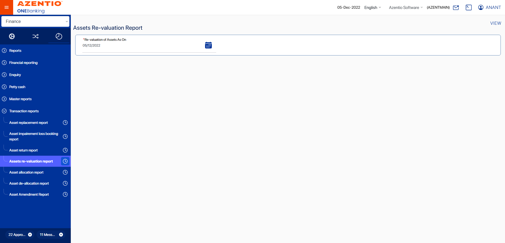Then Click on the View buttonstepdefinitions.HooksClass.addScreenshot(io.cucumber.java.Scenario)screenshotThen close the reportstepdefinitions.HooksClass.addScreenshot(io.cucumber.java.Scenario)screenshotPassCheck Asset replacement ReportGiven Maker Navigate to UAT URL loginstepdefinitions.HooksClass.addScreenshot(io.cucumber.java.Scenario)screenshotThen Click on Report buttonstepdefinitions.HooksClass.addScreenshot(io.cucumber.java.Scenario)screenshot
Then Select Revaluation date in calendarstepdefinitions.HooksClass.addScreenshot(io.cucumber.java.Scenario)screenshot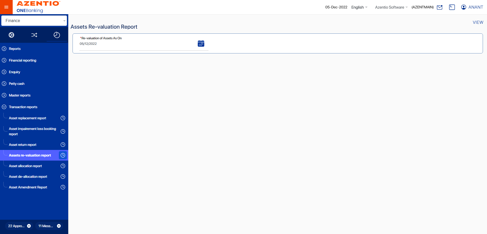Then Click on the View buttonstepdefinitions.HooksClass.addScreenshot(io.cucumber.java.Scenario)screenshotThen close the reportstepdefinitions.HooksClass.addScreenshot(io.cucumber.java.Scenario)screenshotPassCheck Asset replacement ReportGiven Maker Navigate to UAT URL loginstepdefinitions.HooksClass.addScreenshot(io.cucumber.java.Scenario)screenshotThen Click on Report buttonstepdefinitions.HooksClass.addScreenshot(io.cucumber.java.Scenario)screenshot Then Click on Transaction Reports tabstepdefinitions.HooksClass.addScreenshot(io.cucumber.java.Scenario)screenshotThen Click on Asset replacement Report edit buttonstepdefinitions.HooksClass.addScreenshot(io.cucumber.java.Scenario)screenshot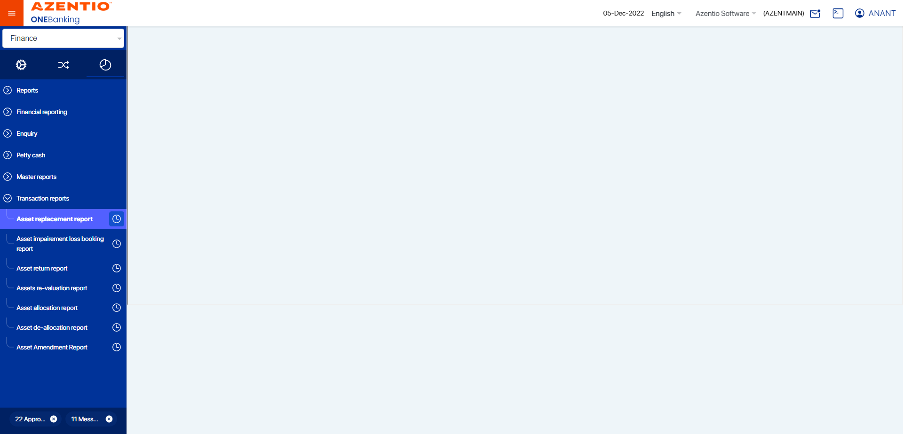Then Choose the data set id for asset replacement reportstepdefinitions.HooksClass.addScreenshot(io.cucumber.java.Scenario)screenshotAnd Get the system datastepdefinitions.HooksClass.addScreenshot(io.cucumber.java.Scenario)screenshot
Then Click on Transaction Reports tabstepdefinitions.HooksClass.addScreenshot(io.cucumber.java.Scenario)screenshotThen Click on Asset replacement Report edit buttonstepdefinitions.HooksClass.addScreenshot(io.cucumber.java.Scenario)screenshot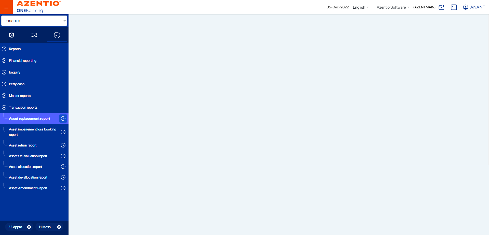Then Choose the data set id for asset replacement reportstepdefinitions.HooksClass.addScreenshot(io.cucumber.java.Scenario)screenshotAnd Get the system datastepdefinitions.HooksClass.addScreenshot(io.cucumber.java.Scenario)screenshot Then Fill details for reportstepdefinitions.HooksClass.addScreenshot(io.cucumber.java.Scenario)screenshot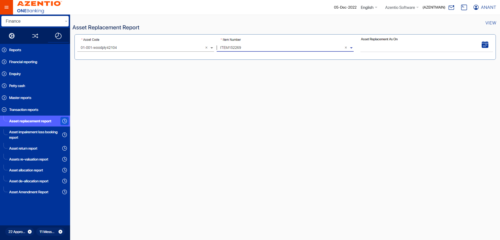Then Select date from calendarstepdefinitions.HooksClass.addScreenshot(io.cucumber.java.Scenario)screenshotThen Click on the View buttonstepdefinitions.HooksClass.addScreenshot(io.cucumber.java.Scenario)screenshotThen close the reportstepdefinitions.HooksClass.addScreenshot(io.cucumber.java.Scenario)screenshot
Then Fill details for reportstepdefinitions.HooksClass.addScreenshot(io.cucumber.java.Scenario)screenshot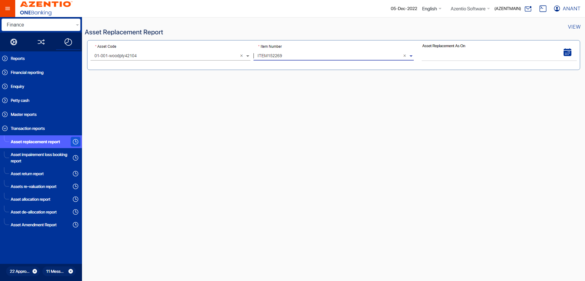Then Select date from calendarstepdefinitions.HooksClass.addScreenshot(io.cucumber.java.Scenario)screenshotThen Click on the View buttonstepdefinitions.HooksClass.addScreenshot(io.cucumber.java.Scenario)screenshotThen close the reportstepdefinitions.HooksClass.addScreenshot(io.cucumber.java.Scenario)screenshot PassCheck Asset return ReportGiven Maker Navigate to UAT URL loginstepdefinitions.HooksClass.addScreenshot(io.cucumber.java.Scenario)screenshot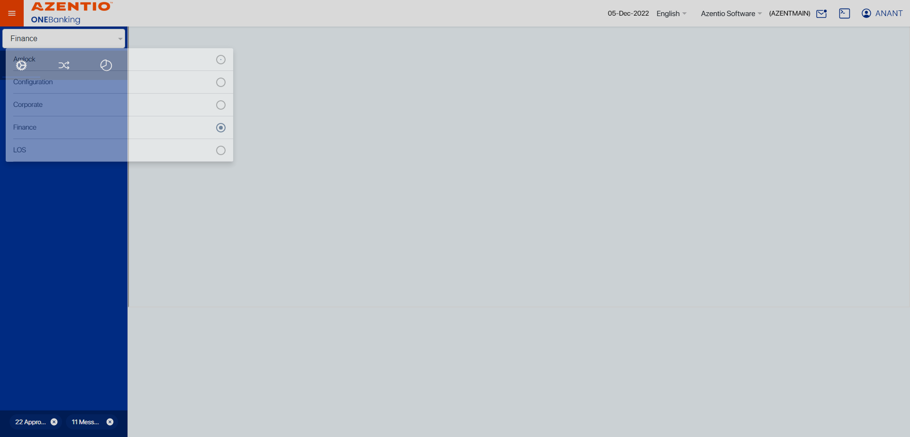Then Click on Report buttonstepdefinitions.HooksClass.addScreenshot(io.cucumber.java.Scenario)screenshot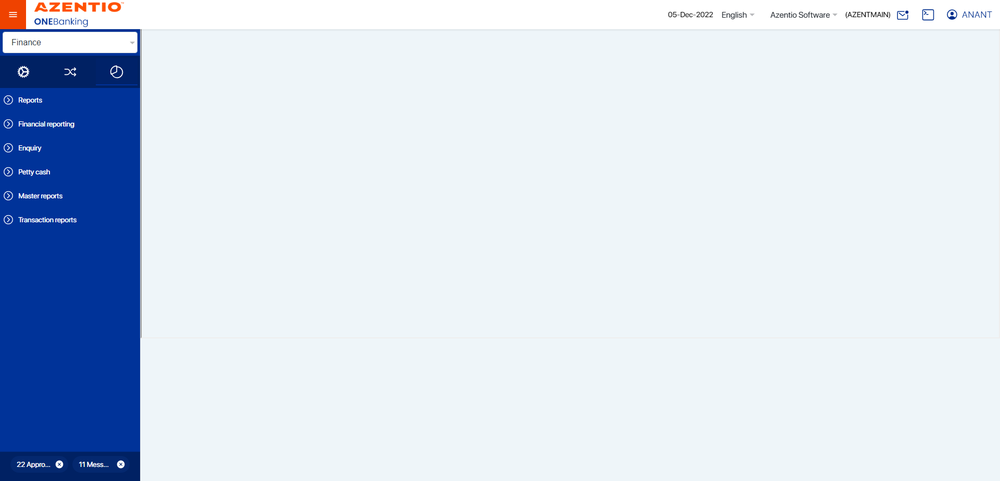Then Click on Transaction Reports tabstepdefinitions.HooksClass.addScreenshot(io.cucumber.java.Scenario)screenshot
PassCheck Asset return ReportGiven Maker Navigate to UAT URL loginstepdefinitions.HooksClass.addScreenshot(io.cucumber.java.Scenario)screenshot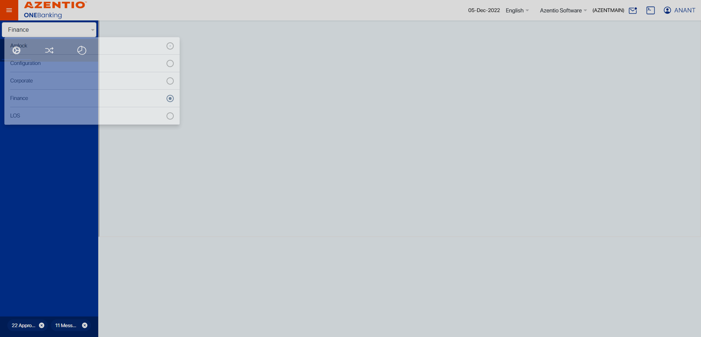Then Click on Report buttonstepdefinitions.HooksClass.addScreenshot(io.cucumber.java.Scenario)screenshot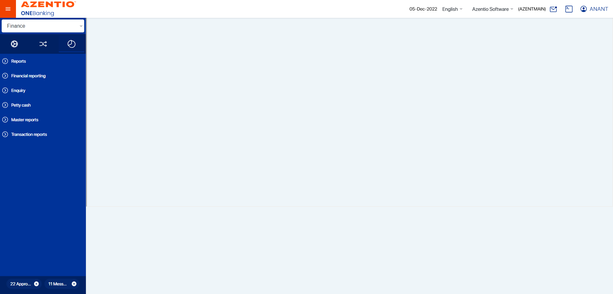Then Click on Transaction Reports tabstepdefinitions.HooksClass.addScreenshot(io.cucumber.java.Scenario)screenshot Then Click on return Report edit buttonstepdefinitions.HooksClass.addScreenshot(io.cucumber.java.Scenario)screenshotThen choose the data set for asset return reportstepdefinitions.HooksClass.addScreenshot(io.cucumber.java.Scenario)screenshotThen Fill details for return reportstepdefinitions.HooksClass.addScreenshot(io.cucumber.java.Scenario)screenshotAnd Get the system datastepdefinitions.HooksClass.addScreenshot(io.cucumber.java.Scenario)screenshotThen Select return date in calendarstepdefinitions.HooksClass.addScreenshot(io.cucumber.java.Scenario)screenshot
Then Click on return Report edit buttonstepdefinitions.HooksClass.addScreenshot(io.cucumber.java.Scenario)screenshotThen choose the data set for asset return reportstepdefinitions.HooksClass.addScreenshot(io.cucumber.java.Scenario)screenshotThen Fill details for return reportstepdefinitions.HooksClass.addScreenshot(io.cucumber.java.Scenario)screenshotAnd Get the system datastepdefinitions.HooksClass.addScreenshot(io.cucumber.java.Scenario)screenshotThen Select return date in calendarstepdefinitions.HooksClass.addScreenshot(io.cucumber.java.Scenario)screenshot Then Click on the View buttonstepdefinitions.HooksClass.addScreenshot(io.cucumber.java.Scenario)screenshot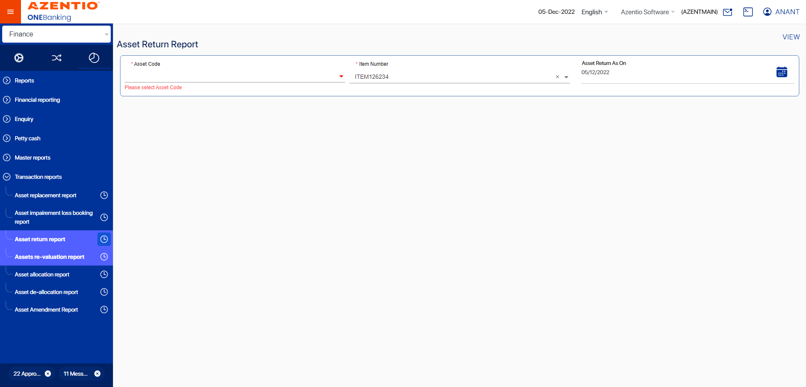Then close the reportstepdefinitions.HooksClass.addScreenshot(io.cucumber.java.Scenario)screenshotPassCheck Impairement Loss booking ReportGiven Maker Navigate to UAT URL loginstepdefinitions.HooksClass.addScreenshot(io.cucumber.java.Scenario)screenshot
Then Click on the View buttonstepdefinitions.HooksClass.addScreenshot(io.cucumber.java.Scenario)screenshot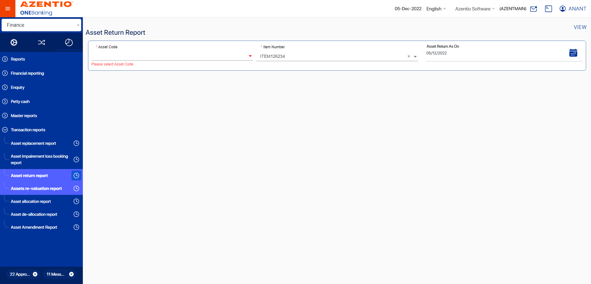Then close the reportstepdefinitions.HooksClass.addScreenshot(io.cucumber.java.Scenario)screenshotPassCheck Impairement Loss booking ReportGiven Maker Navigate to UAT URL loginstepdefinitions.HooksClass.addScreenshot(io.cucumber.java.Scenario)screenshot Then Click on Report buttonstepdefinitions.HooksClass.addScreenshot(io.cucumber.java.Scenario)screenshotThen Click on Transaction Reports tabstepdefinitions.HooksClass.addScreenshot(io.cucumber.java.Scenario)screenshot
Then Click on Report buttonstepdefinitions.HooksClass.addScreenshot(io.cucumber.java.Scenario)screenshotThen Click on Transaction Reports tabstepdefinitions.HooksClass.addScreenshot(io.cucumber.java.Scenario)screenshot Then Click on Impairement Report edit buttonstepdefinitions.HooksClass.addScreenshot(io.cucumber.java.Scenario)screenshotAnd Get the system datastepdefinitions.HooksClass.addScreenshot(io.cucumber.java.Scenario)screenshotThen Select Impairement loss date in calendarstepdefinitions.HooksClass.addScreenshot(io.cucumber.java.Scenario)screenshot
Then Click on Impairement Report edit buttonstepdefinitions.HooksClass.addScreenshot(io.cucumber.java.Scenario)screenshotAnd Get the system datastepdefinitions.HooksClass.addScreenshot(io.cucumber.java.Scenario)screenshotThen Select Impairement loss date in calendarstepdefinitions.HooksClass.addScreenshot(io.cucumber.java.Scenario)screenshot Then Click on the View buttonstepdefinitions.HooksClass.addScreenshot(io.cucumber.java.Scenario)screenshot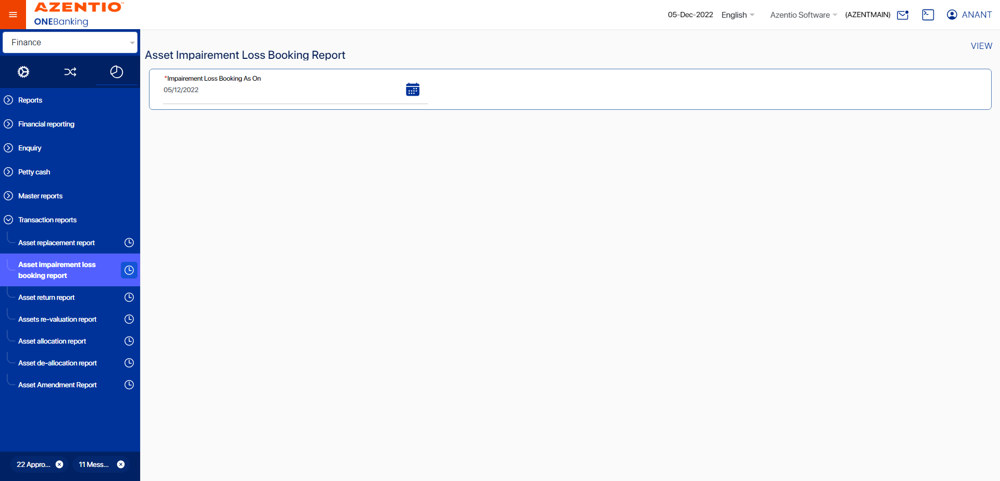Then close the reportstepdefinitions.HooksClass.addScreenshot(io.cucumber.java.Scenario)screenshotPassCheck Asset Allocation ReportGiven Maker Navigate to UAT URL loginstepdefinitions.HooksClass.addScreenshot(io.cucumber.java.Scenario)screenshot
Then Click on the View buttonstepdefinitions.HooksClass.addScreenshot(io.cucumber.java.Scenario)screenshot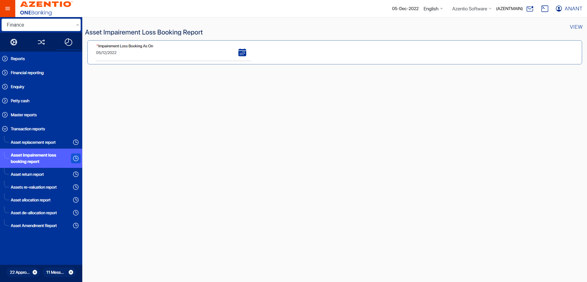Then close the reportstepdefinitions.HooksClass.addScreenshot(io.cucumber.java.Scenario)screenshotPassCheck Asset Allocation ReportGiven Maker Navigate to UAT URL loginstepdefinitions.HooksClass.addScreenshot(io.cucumber.java.Scenario)screenshot Then Click on Report buttonstepdefinitions.HooksClass.addScreenshot(io.cucumber.java.Scenario)screenshot
Then Click on Report buttonstepdefinitions.HooksClass.addScreenshot(io.cucumber.java.Scenario)screenshot Then Click on Transaction Reports tabstepdefinitions.HooksClass.addScreenshot(io.cucumber.java.Scenario)screenshot
Then Click on Transaction Reports tabstepdefinitions.HooksClass.addScreenshot(io.cucumber.java.Scenario)screenshot Then Click on Allocation Report edit buttonstepdefinitions.HooksClass.addScreenshot(io.cucumber.java.Scenario)screenshotThen Choose the data set id for asset allocation reportstepdefinitions.HooksClass.addScreenshot(io.cucumber.java.Scenario)screenshotAnd Get the system datastepdefinitions.HooksClass.addScreenshot(io.cucumber.java.Scenario)screenshotThen fill Allocation Report detailsstepdefinitions.HooksClass.addScreenshot(io.cucumber.java.Scenario)screenshot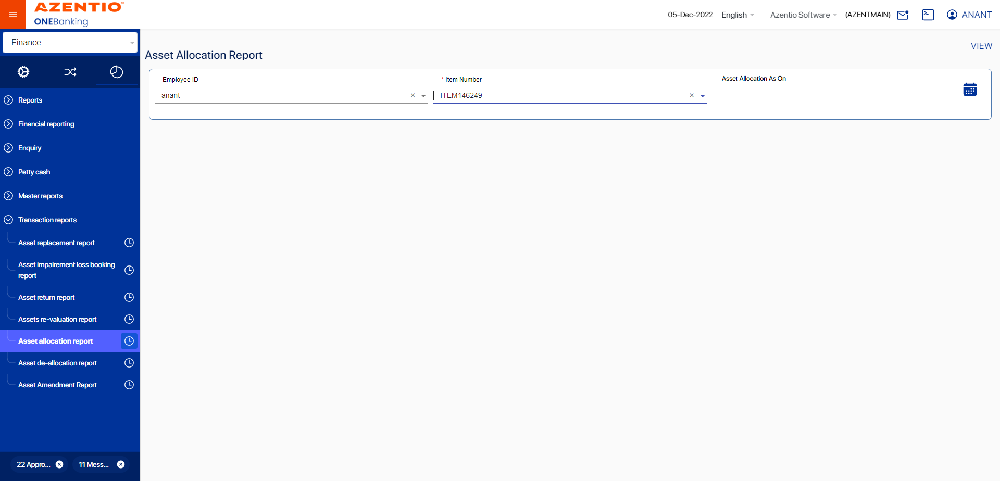Then Select Allocation date in calendarstepdefinitions.HooksClass.addScreenshot(io.cucumber.java.Scenario)screenshotThen Click on the View buttonstepdefinitions.HooksClass.addScreenshot(io.cucumber.java.Scenario)screenshotThen close the reportstepdefinitions.HooksClass.addScreenshot(io.cucumber.java.Scenario)screenshotPassCheck Asset DeAllocation ReportGiven Maker Navigate to UAT URL loginstepdefinitions.HooksClass.addScreenshot(io.cucumber.java.Scenario)screenshot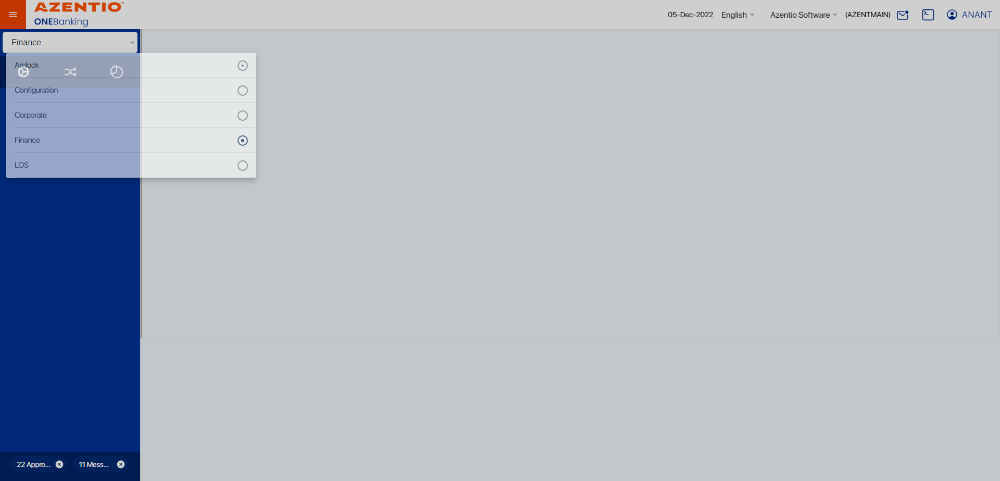Then Click on Report buttonstepdefinitions.HooksClass.addScreenshot(io.cucumber.java.Scenario)screenshot
Then Click on Allocation Report edit buttonstepdefinitions.HooksClass.addScreenshot(io.cucumber.java.Scenario)screenshotThen Choose the data set id for asset allocation reportstepdefinitions.HooksClass.addScreenshot(io.cucumber.java.Scenario)screenshotAnd Get the system datastepdefinitions.HooksClass.addScreenshot(io.cucumber.java.Scenario)screenshotThen fill Allocation Report detailsstepdefinitions.HooksClass.addScreenshot(io.cucumber.java.Scenario)screenshot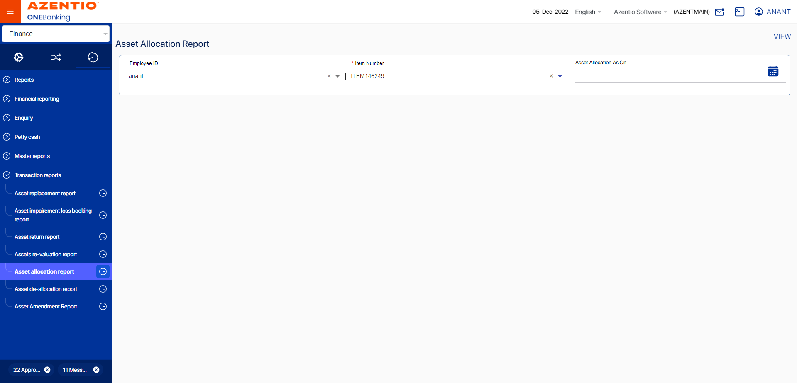Then Select Allocation date in calendarstepdefinitions.HooksClass.addScreenshot(io.cucumber.java.Scenario)screenshotThen Click on the View buttonstepdefinitions.HooksClass.addScreenshot(io.cucumber.java.Scenario)screenshotThen close the reportstepdefinitions.HooksClass.addScreenshot(io.cucumber.java.Scenario)screenshotPassCheck Asset DeAllocation ReportGiven Maker Navigate to UAT URL loginstepdefinitions.HooksClass.addScreenshot(io.cucumber.java.Scenario)screenshot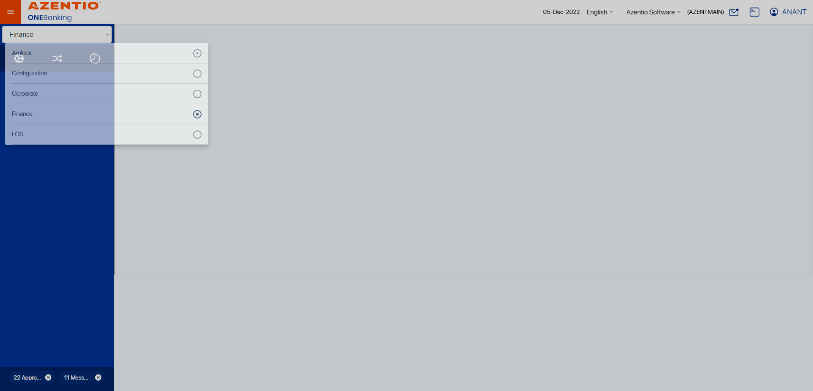Then Click on Report buttonstepdefinitions.HooksClass.addScreenshot(io.cucumber.java.Scenario)screenshot Then Click on Transaction Reports tabstepdefinitions.HooksClass.addScreenshot(io.cucumber.java.Scenario)screenshotThen Click on DeAllocation Report edit buttonstepdefinitions.HooksClass.addScreenshot(io.cucumber.java.Scenario)screenshotThen Choose the data set id for asset allocation reportstepdefinitions.HooksClass.addScreenshot(io.cucumber.java.Scenario)screenshotThen fill DeAllocation Report detailsstepdefinitions.HooksClass.addScreenshot(io.cucumber.java.Scenario)screenshot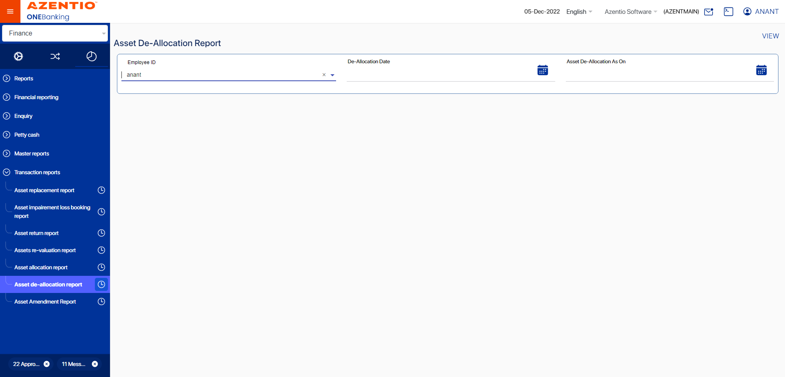And Get the system datastepdefinitions.HooksClass.addScreenshot(io.cucumber.java.Scenario)screenshotThen Select DeAllocation from date in calendarstepdefinitions.HooksClass.addScreenshot(io.cucumber.java.Scenario)screenshotThen Select DeAllocation to date in calendarstepdefinitions.HooksClass.addScreenshot(io.cucumber.java.Scenario)screenshotThen Click on the View buttonstepdefinitions.HooksClass.addScreenshot(io.cucumber.java.Scenario)screenshot
Then Click on Transaction Reports tabstepdefinitions.HooksClass.addScreenshot(io.cucumber.java.Scenario)screenshotThen Click on DeAllocation Report edit buttonstepdefinitions.HooksClass.addScreenshot(io.cucumber.java.Scenario)screenshotThen Choose the data set id for asset allocation reportstepdefinitions.HooksClass.addScreenshot(io.cucumber.java.Scenario)screenshotThen fill DeAllocation Report detailsstepdefinitions.HooksClass.addScreenshot(io.cucumber.java.Scenario)screenshot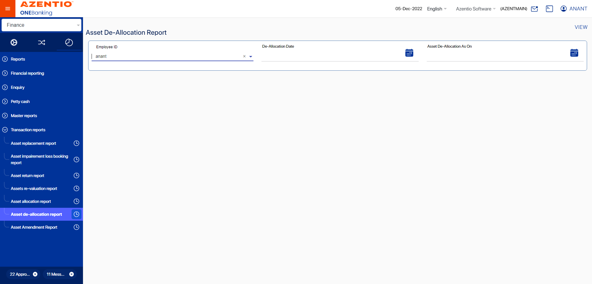And Get the system datastepdefinitions.HooksClass.addScreenshot(io.cucumber.java.Scenario)screenshotThen Select DeAllocation from date in calendarstepdefinitions.HooksClass.addScreenshot(io.cucumber.java.Scenario)screenshotThen Select DeAllocation to date in calendarstepdefinitions.HooksClass.addScreenshot(io.cucumber.java.Scenario)screenshotThen Click on the View buttonstepdefinitions.HooksClass.addScreenshot(io.cucumber.java.Scenario)screenshot Then close the reportstepdefinitions.HooksClass.addScreenshot(io.cucumber.java.Scenario)screenshotPassMap the various GLs for created asset codeGiven Maker Navigate to UAT URL loginstepdefinitions.HooksClass.addScreenshot(io.cucumber.java.Scenario)screenshotThen click on report segment buttonstepdefinitions.HooksClass.addScreenshot(io.cucumber.java.Scenario)screenshotThen Click on Report fieldstepdefinitions.HooksClass.addScreenshot(io.cucumber.java.Scenario)screenshot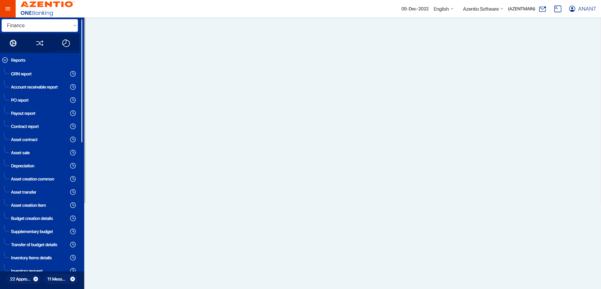And Choose the data set id for asset sale reportstepdefinitions.HooksClass.addScreenshot(io.cucumber.java.Scenario)screenshot
Then close the reportstepdefinitions.HooksClass.addScreenshot(io.cucumber.java.Scenario)screenshotPassMap the various GLs for created asset codeGiven Maker Navigate to UAT URL loginstepdefinitions.HooksClass.addScreenshot(io.cucumber.java.Scenario)screenshotThen click on report segment buttonstepdefinitions.HooksClass.addScreenshot(io.cucumber.java.Scenario)screenshotThen Click on Report fieldstepdefinitions.HooksClass.addScreenshot(io.cucumber.java.Scenario)screenshot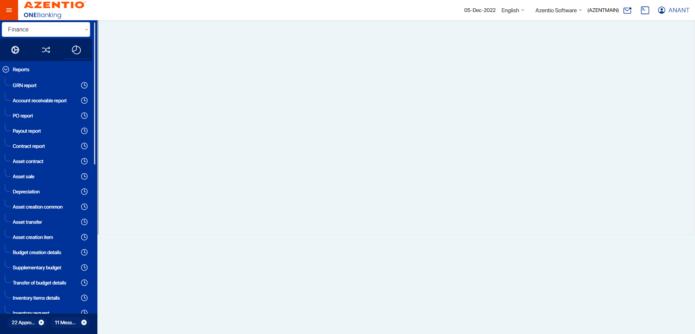And Choose the data set id for asset sale reportstepdefinitions.HooksClass.addScreenshot(io.cucumber.java.Scenario)screenshot Then click on Asset Sale Reportstepdefinitions.HooksClass.addScreenshot(io.cucumber.java.Scenario)screenshotThen Select the Asset Sale Codestepdefinitions.HooksClass.addScreenshot(io.cucumber.java.Scenario)screenshot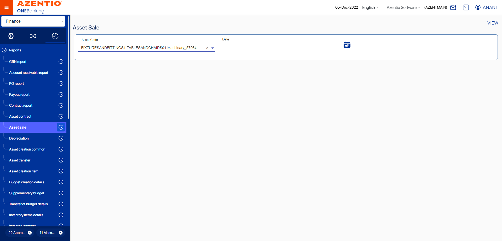And Get the system data for asset salestepdefinitions.HooksClass.addScreenshot(io.cucumber.java.Scenario)screenshotThen Select the date Asset Salestepdefinitions.HooksClass.addScreenshot(io.cucumber.java.Scenario)screenshot
Then click on Asset Sale Reportstepdefinitions.HooksClass.addScreenshot(io.cucumber.java.Scenario)screenshotThen Select the Asset Sale Codestepdefinitions.HooksClass.addScreenshot(io.cucumber.java.Scenario)screenshot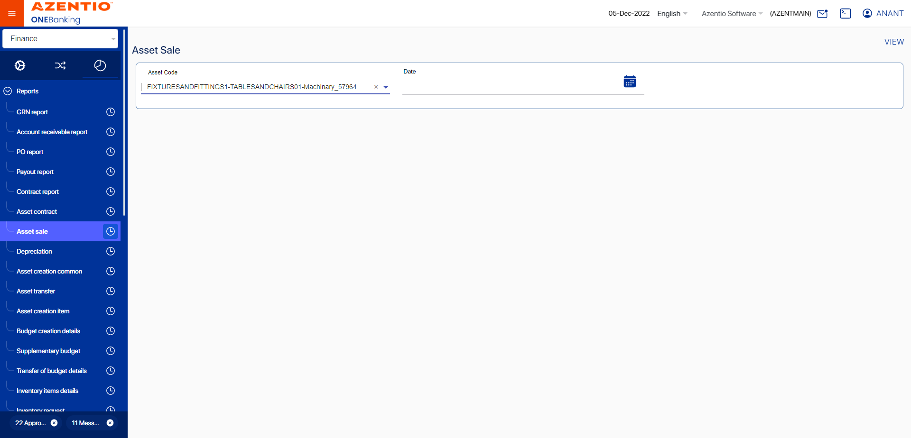And Get the system data for asset salestepdefinitions.HooksClass.addScreenshot(io.cucumber.java.Scenario)screenshotThen Select the date Asset Salestepdefinitions.HooksClass.addScreenshot(io.cucumber.java.Scenario)screenshot And click on view button of reportstepdefinitions.HooksClass.addScreenshot(io.cucumber.java.Scenario)screenshot
And click on view button of reportstepdefinitions.HooksClass.addScreenshot(io.cucumber.java.Scenario)screenshot Then verify the Asset Sale reportstepdefinitions.HooksClass.addScreenshot(io.cucumber.java.Scenario)screenshotPassCheck Asset UndertakingGiven User should go to the kubs url and login as a maker userstepdefinitions.HooksClass.addScreenshot(io.cucumber.java.Scenario)screenshot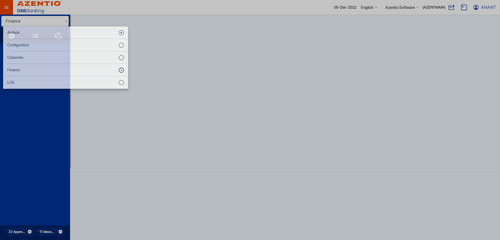Then click on report iconstepdefinitions.HooksClass.addScreenshot(io.cucumber.java.Scenario)screenshot
Then verify the Asset Sale reportstepdefinitions.HooksClass.addScreenshot(io.cucumber.java.Scenario)screenshotPassCheck Asset UndertakingGiven User should go to the kubs url and login as a maker userstepdefinitions.HooksClass.addScreenshot(io.cucumber.java.Scenario)screenshot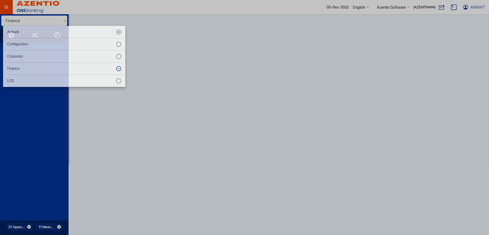Then click on report iconstepdefinitions.HooksClass.addScreenshot(io.cucumber.java.Scenario)screenshot And user should navigate to reports menustepdefinitions.HooksClass.addScreenshot(io.cucumber.java.Scenario)screenshot
And user should navigate to reports menustepdefinitions.HooksClass.addScreenshot(io.cucumber.java.Scenario)screenshot Then click on temp grid button of asset transferstepdefinitions.HooksClass.addScreenshot(io.cucumber.java.Scenario)screenshot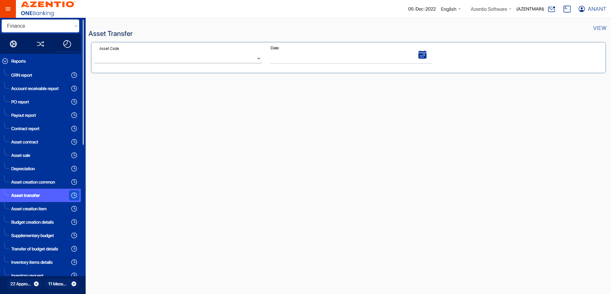And choose the data set id for asset undertaking reportstepdefinitions.HooksClass.addScreenshot(io.cucumber.java.Scenario)screenshotAnd Get the system date for asset undertakingstepdefinitions.HooksClass.addScreenshot(io.cucumber.java.Scenario)screenshot
Then click on temp grid button of asset transferstepdefinitions.HooksClass.addScreenshot(io.cucumber.java.Scenario)screenshot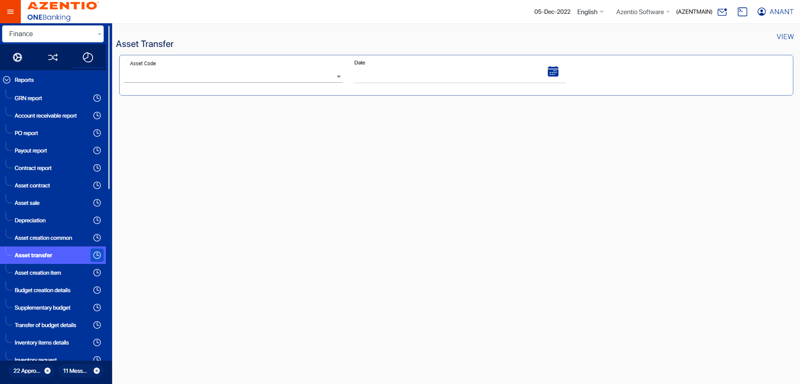And choose the data set id for asset undertaking reportstepdefinitions.HooksClass.addScreenshot(io.cucumber.java.Scenario)screenshotAnd Get the system date for asset undertakingstepdefinitions.HooksClass.addScreenshot(io.cucumber.java.Scenario)screenshot And select the asset code and date to check the asset undertaking details are displayingstepdefinitions.HooksClass.addScreenshot(io.cucumber.java.Scenario)screenshotThen click in the view button to checkstepdefinitions.HooksClass.addScreenshot(io.cucumber.java.Scenario)screenshotThen the report is displaying all the asset undertaking details for a branchstepdefinitions.HooksClass.addScreenshot(io.cucumber.java.Scenario)screenshot
And select the asset code and date to check the asset undertaking details are displayingstepdefinitions.HooksClass.addScreenshot(io.cucumber.java.Scenario)screenshotThen click in the view button to checkstepdefinitions.HooksClass.addScreenshot(io.cucumber.java.Scenario)screenshotThen the report is displaying all the asset undertaking details for a branchstepdefinitions.HooksClass.addScreenshot(io.cucumber.java.Scenario)screenshot FailCheck Asset TransferGiven User should go to the kubs url and login as a maker userstepdefinitions.HooksClass.addScreenshot(io.cucumber.java.Scenario)screenshot
FailCheck Asset TransferGiven User should go to the kubs url and login as a maker userstepdefinitions.HooksClass.addScreenshot(io.cucumber.java.Scenario)screenshot Then click on report iconStep skippedAnd user should navigate to reports menuStep skippedThen click on temp grid button of asset transferStep skippedThen choose the data set id for asset transfer reportStep skippedAnd Get the system date for asset undertakingStep skippedAnd select the asset code and date to check the asset transfer details are displayingStep skippedThen click in the view button to checkStep skippedThen the report is displaying all the asset transfer details for a branchStep skippedPassCheck Asset ContractGiven User should go to the kubs url and login as a maker userstepdefinitions.HooksClass.addScreenshot(io.cucumber.java.Scenario)screenshot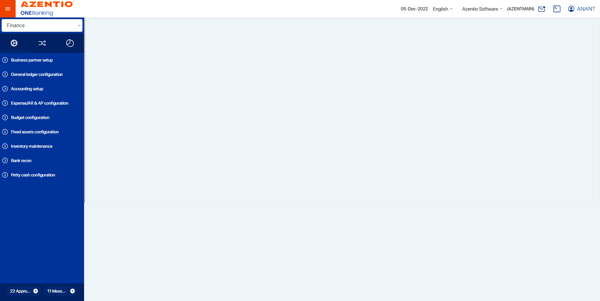Then click on report iconstepdefinitions.HooksClass.addScreenshot(io.cucumber.java.Scenario)screenshotAnd user should navigate to reports menustepdefinitions.HooksClass.addScreenshot(io.cucumber.java.Scenario)screenshotThen Get the data set id for the report of asset contractstepdefinitions.HooksClass.addScreenshot(io.cucumber.java.Scenario)screenshotThen click on temp grid button of asset contractstepdefinitions.HooksClass.addScreenshot(io.cucumber.java.Scenario)screenshotAnd Get the system date for asset undertakingstepdefinitions.HooksClass.addScreenshot(io.cucumber.java.Scenario)screenshot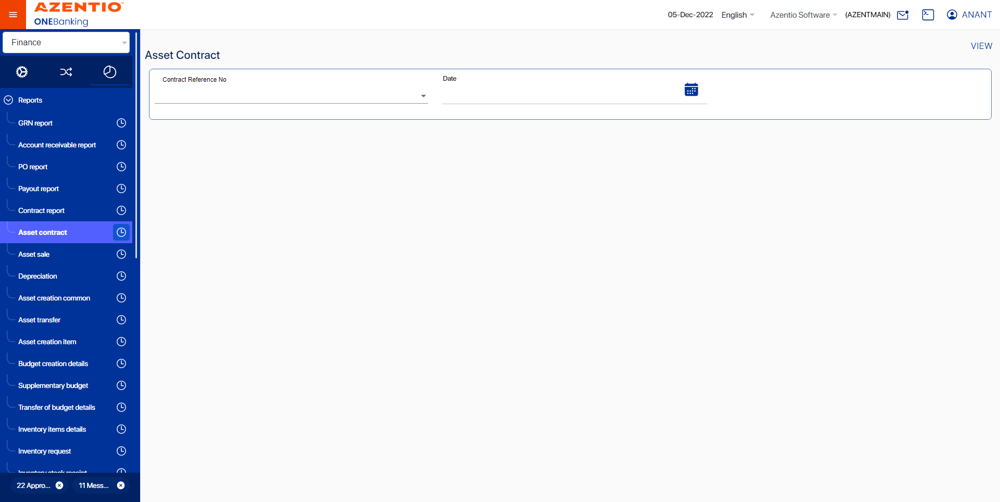And select the contract ref number and date to check asset contract details are displayingstepdefinitions.HooksClass.addScreenshot(io.cucumber.java.Scenario)screenshotThen click in the view button to checkstepdefinitions.HooksClass.addScreenshot(io.cucumber.java.Scenario)screenshotThen the report is displaying all the asset contract details for a branchstepdefinitions.HooksClass.addScreenshot(io.cucumber.java.Scenario)screenshotPassCheck Asset Amendment ReportGiven Maker Navigate to UAT URL loginstepdefinitions.HooksClass.addScreenshot(io.cucumber.java.Scenario)screenshotThen Click on Report buttonstepdefinitions.HooksClass.addScreenshot(io.cucumber.java.Scenario)screenshotThen Click on Transaction Reports tabstepdefinitions.HooksClass.addScreenshot(io.cucumber.java.Scenario)screenshot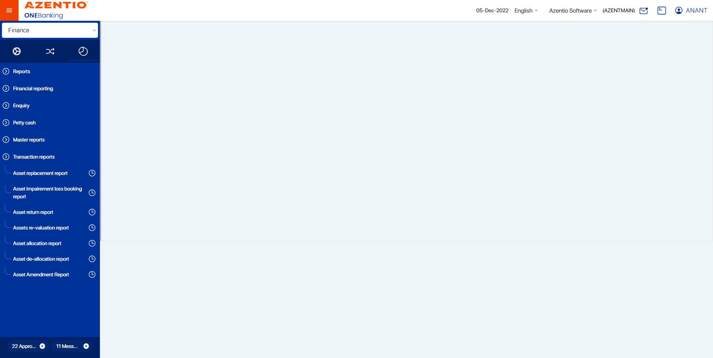Then Click on Amendment Report edit buttonstepdefinitions.HooksClass.addScreenshot(io.cucumber.java.Scenario)screenshot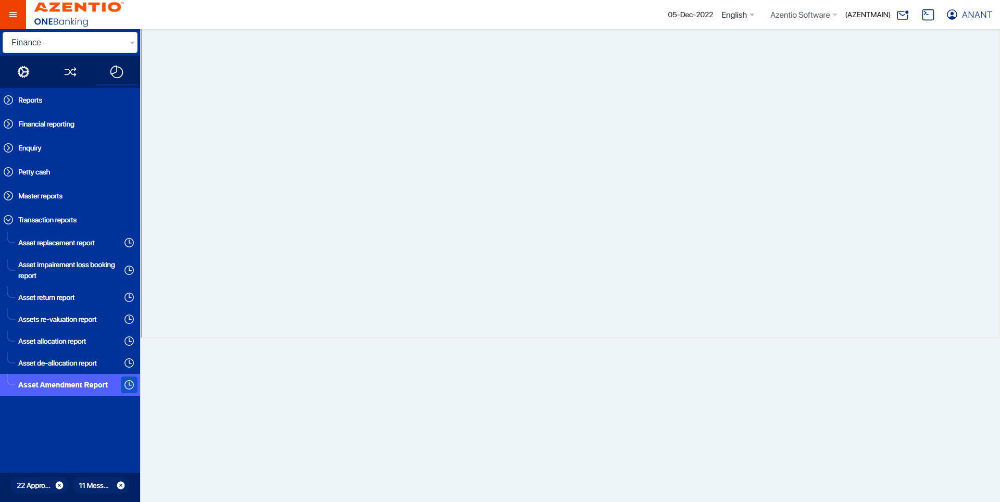Then Choose the data set id for asset amenment reportstepdefinitions.HooksClass.addScreenshot(io.cucumber.java.Scenario)screenshot
Then click on report iconStep skippedAnd user should navigate to reports menuStep skippedThen click on temp grid button of asset transferStep skippedThen choose the data set id for asset transfer reportStep skippedAnd Get the system date for asset undertakingStep skippedAnd select the asset code and date to check the asset transfer details are displayingStep skippedThen click in the view button to checkStep skippedThen the report is displaying all the asset transfer details for a branchStep skippedPassCheck Asset ContractGiven User should go to the kubs url and login as a maker userstepdefinitions.HooksClass.addScreenshot(io.cucumber.java.Scenario)screenshot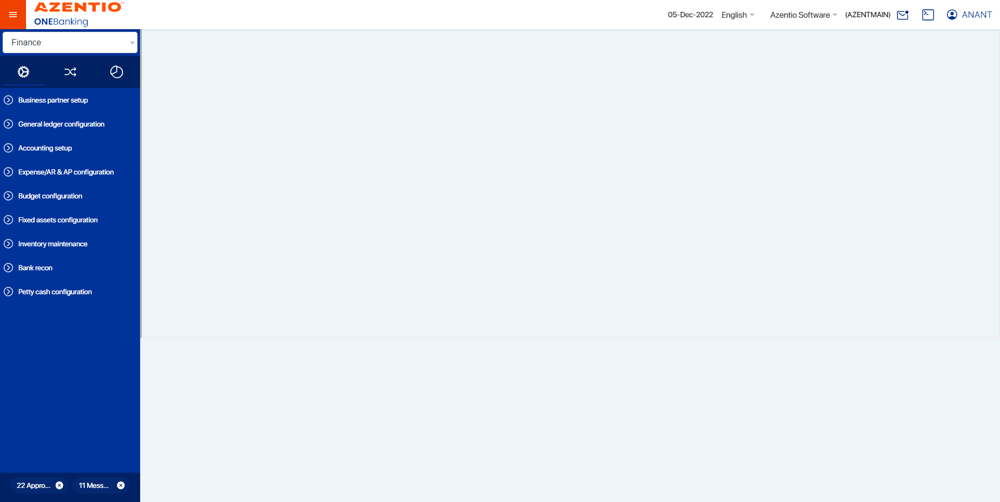Then click on report iconstepdefinitions.HooksClass.addScreenshot(io.cucumber.java.Scenario)screenshotAnd user should navigate to reports menustepdefinitions.HooksClass.addScreenshot(io.cucumber.java.Scenario)screenshotThen Get the data set id for the report of asset contractstepdefinitions.HooksClass.addScreenshot(io.cucumber.java.Scenario)screenshotThen click on temp grid button of asset contractstepdefinitions.HooksClass.addScreenshot(io.cucumber.java.Scenario)screenshotAnd Get the system date for asset undertakingstepdefinitions.HooksClass.addScreenshot(io.cucumber.java.Scenario)screenshot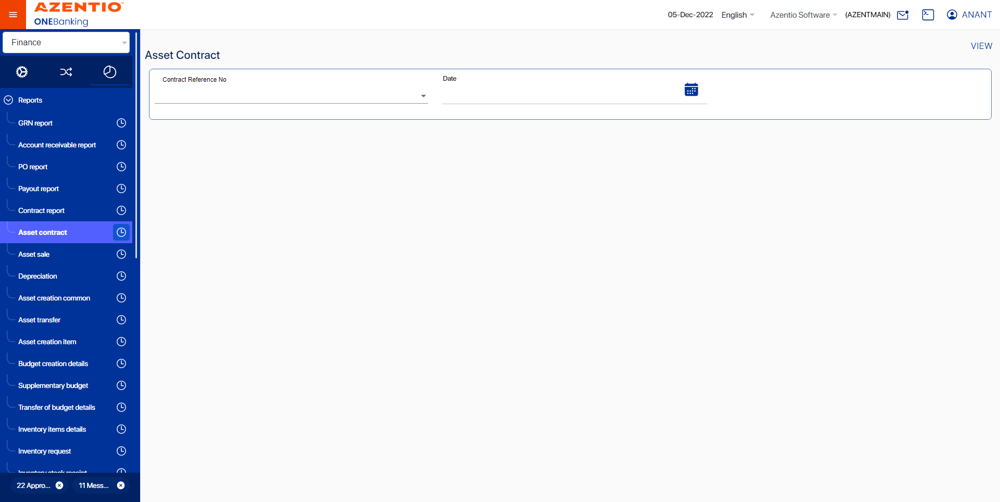And select the contract ref number and date to check asset contract details are displayingstepdefinitions.HooksClass.addScreenshot(io.cucumber.java.Scenario)screenshotThen click in the view button to checkstepdefinitions.HooksClass.addScreenshot(io.cucumber.java.Scenario)screenshotThen the report is displaying all the asset contract details for a branchstepdefinitions.HooksClass.addScreenshot(io.cucumber.java.Scenario)screenshotPassCheck Asset Amendment ReportGiven Maker Navigate to UAT URL loginstepdefinitions.HooksClass.addScreenshot(io.cucumber.java.Scenario)screenshotThen Click on Report buttonstepdefinitions.HooksClass.addScreenshot(io.cucumber.java.Scenario)screenshotThen Click on Transaction Reports tabstepdefinitions.HooksClass.addScreenshot(io.cucumber.java.Scenario)screenshot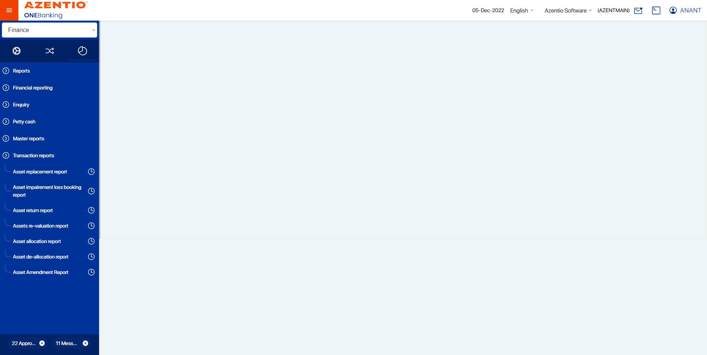Then Click on Amendment Report edit buttonstepdefinitions.HooksClass.addScreenshot(io.cucumber.java.Scenario)screenshot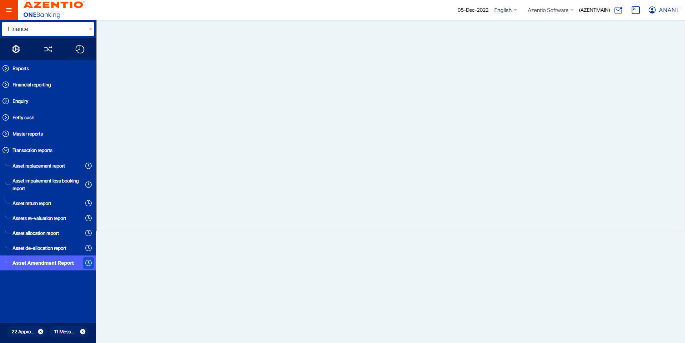Then Choose the data set id for asset amenment reportstepdefinitions.HooksClass.addScreenshot(io.cucumber.java.Scenario)screenshot Then fill Amendment Report detailsstepdefinitions.HooksClass.addScreenshot(io.cucumber.java.Scenario)screenshot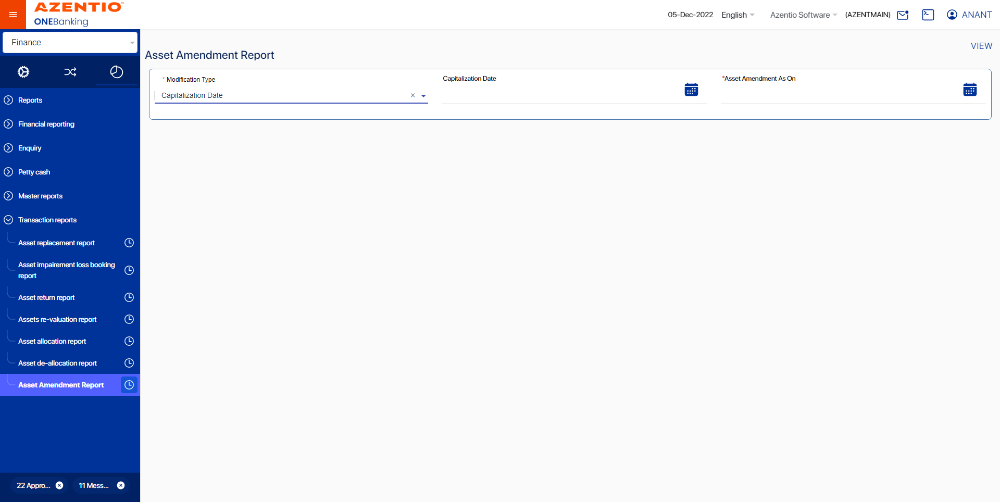Then Get the system date for asset ammenment reportstepdefinitions.HooksClass.addScreenshot(io.cucumber.java.Scenario)screenshotThen Select Amendment from date in calendarstepdefinitions.HooksClass.addScreenshot(io.cucumber.java.Scenario)screenshotThen Select Amendment to date in calendarstepdefinitions.HooksClass.addScreenshot(io.cucumber.java.Scenario)screenshotThen Click on the View buttonstepdefinitions.HooksClass.addScreenshot(io.cucumber.java.Scenario)screenshotThen close the reportstepdefinitions.HooksClass.addScreenshot(io.cucumber.java.Scenario)screenshotPassCheck Asset CodesGiven User should go to the kubs url and login as a maker userstepdefinitions.HooksClass.addScreenshot(io.cucumber.java.Scenario)screenshot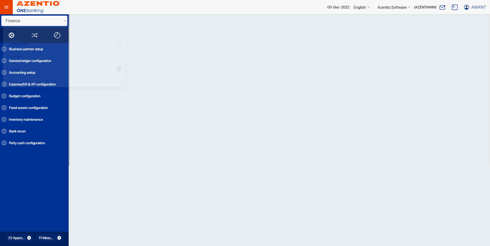Then click on report iconstepdefinitions.HooksClass.addScreenshot(io.cucumber.java.Scenario)screenshotAnd user should navigate to master reports menustepdefinitions.HooksClass.addScreenshot(io.cucumber.java.Scenario)screenshot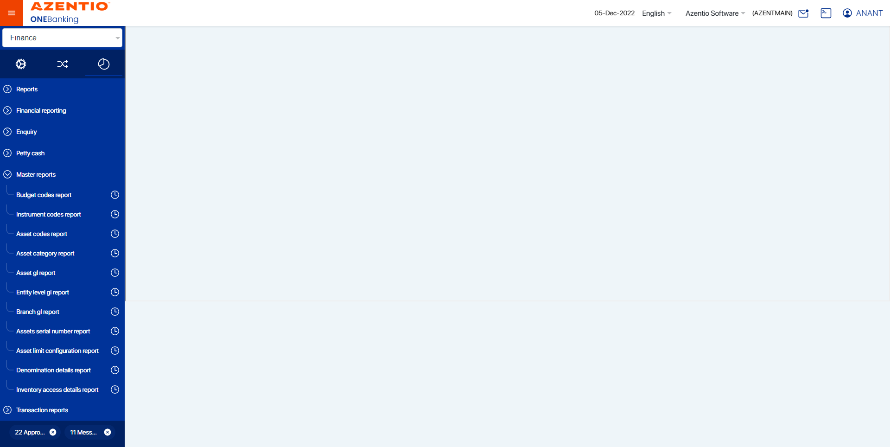Then click on temp grid button of asset codestepdefinitions.HooksClass.addScreenshot(io.cucumber.java.Scenario)screenshot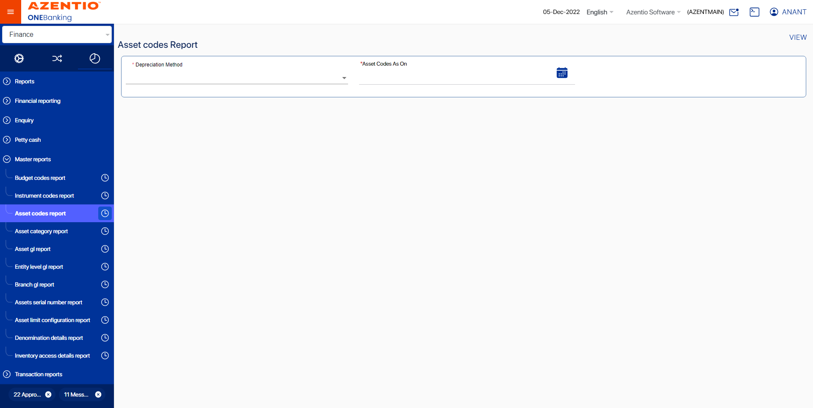Then Choose the data set for asset code reportstepdefinitions.HooksClass.addScreenshot(io.cucumber.java.Scenario)screenshotThen Get the system date for asset code reportstepdefinitions.HooksClass.addScreenshot(io.cucumber.java.Scenario)screenshotAnd select the depreciation method and date to check the asset codes are displayingstepdefinitions.HooksClass.addScreenshot(io.cucumber.java.Scenario)screenshotThen click in the view button to checkstepdefinitions.HooksClass.addScreenshot(io.cucumber.java.Scenario)screenshotThen the report is displaying all the asset codes details for a branchstepdefinitions.HooksClass.addScreenshot(io.cucumber.java.Scenario)screenshotFailCheck DepreciationGiven User should go to the kubs url and login as a maker userstepdefinitions.HooksClass.addScreenshot(io.cucumber.java.Scenario)screenshot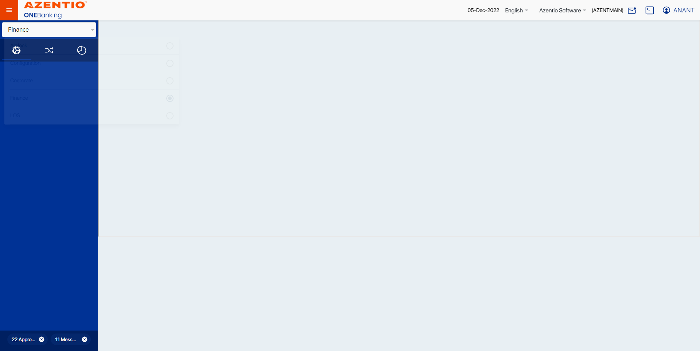Then click on report iconstepdefinitions.HooksClass.addScreenshot(io.cucumber.java.Scenario)screenshotAnd user should navigate to reports menustepdefinitions.HooksClass.addScreenshot(io.cucumber.java.Scenario)screenshotThen click on temp grid button of depreciationstepdefinitions.HooksClass.addScreenshot(io.cucumber.java.Scenario)screenshotAnd Choose the data set id for depreciation reportstepdefinitions.HooksClass.addScreenshot(io.cucumber.java.Scenario)screenshot
Then fill Amendment Report detailsstepdefinitions.HooksClass.addScreenshot(io.cucumber.java.Scenario)screenshot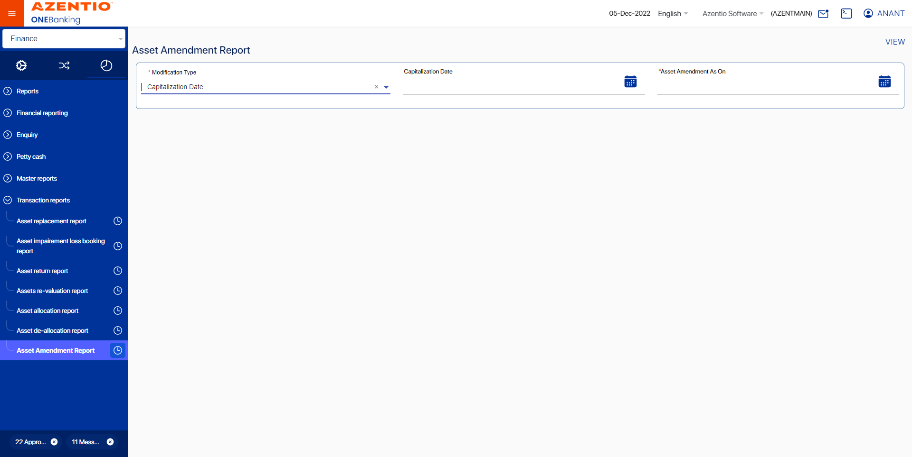Then Get the system date for asset ammenment reportstepdefinitions.HooksClass.addScreenshot(io.cucumber.java.Scenario)screenshotThen Select Amendment from date in calendarstepdefinitions.HooksClass.addScreenshot(io.cucumber.java.Scenario)screenshotThen Select Amendment to date in calendarstepdefinitions.HooksClass.addScreenshot(io.cucumber.java.Scenario)screenshotThen Click on the View buttonstepdefinitions.HooksClass.addScreenshot(io.cucumber.java.Scenario)screenshotThen close the reportstepdefinitions.HooksClass.addScreenshot(io.cucumber.java.Scenario)screenshotPassCheck Asset CodesGiven User should go to the kubs url and login as a maker userstepdefinitions.HooksClass.addScreenshot(io.cucumber.java.Scenario)screenshot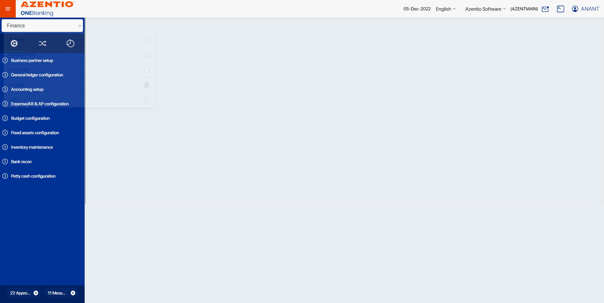Then click on report iconstepdefinitions.HooksClass.addScreenshot(io.cucumber.java.Scenario)screenshotAnd user should navigate to master reports menustepdefinitions.HooksClass.addScreenshot(io.cucumber.java.Scenario)screenshot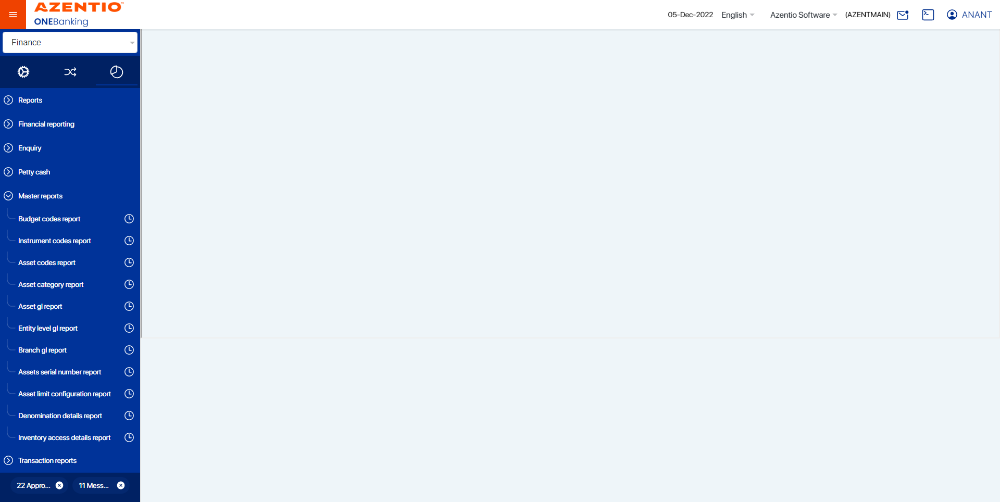Then click on temp grid button of asset codestepdefinitions.HooksClass.addScreenshot(io.cucumber.java.Scenario)screenshot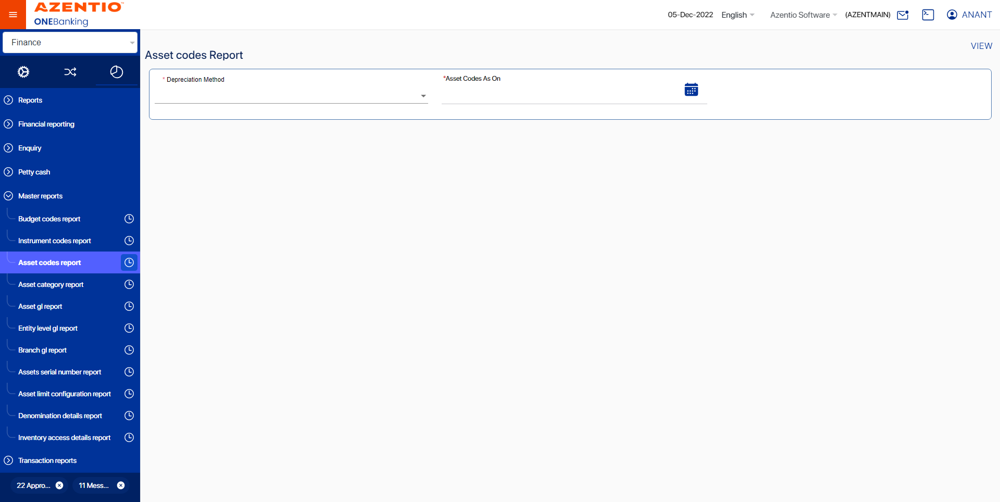Then Choose the data set for asset code reportstepdefinitions.HooksClass.addScreenshot(io.cucumber.java.Scenario)screenshotThen Get the system date for asset code reportstepdefinitions.HooksClass.addScreenshot(io.cucumber.java.Scenario)screenshotAnd select the depreciation method and date to check the asset codes are displayingstepdefinitions.HooksClass.addScreenshot(io.cucumber.java.Scenario)screenshotThen click in the view button to checkstepdefinitions.HooksClass.addScreenshot(io.cucumber.java.Scenario)screenshotThen the report is displaying all the asset codes details for a branchstepdefinitions.HooksClass.addScreenshot(io.cucumber.java.Scenario)screenshotFailCheck DepreciationGiven User should go to the kubs url and login as a maker userstepdefinitions.HooksClass.addScreenshot(io.cucumber.java.Scenario)screenshot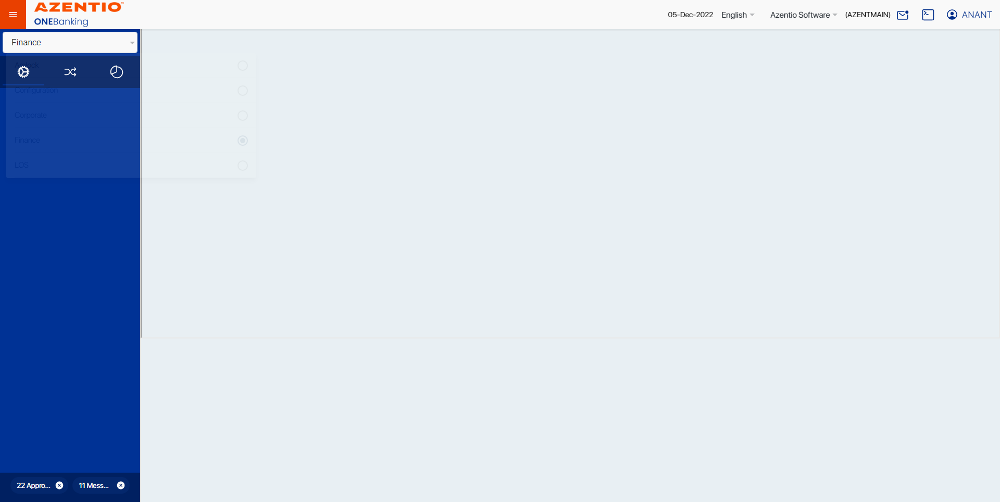Then click on report iconstepdefinitions.HooksClass.addScreenshot(io.cucumber.java.Scenario)screenshotAnd user should navigate to reports menustepdefinitions.HooksClass.addScreenshot(io.cucumber.java.Scenario)screenshotThen click on temp grid button of depreciationstepdefinitions.HooksClass.addScreenshot(io.cucumber.java.Scenario)screenshotAnd Choose the data set id for depreciation reportstepdefinitions.HooksClass.addScreenshot(io.cucumber.java.Scenario)screenshot And Get the system date for the depreciation reportstepdefinitions.HooksClass.addScreenshot(io.cucumber.java.Scenario)screenshot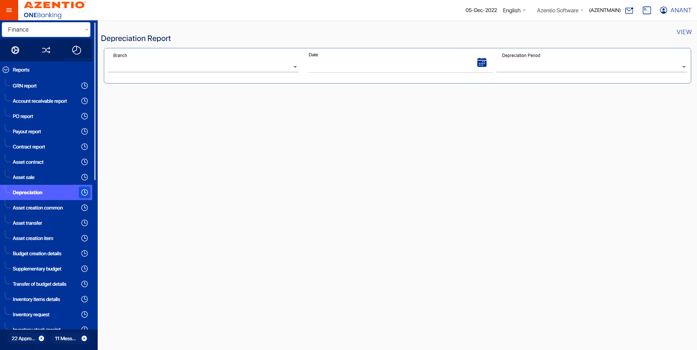And select required fields to check the depreciation details are displayingstepdefinitions.HooksClass.addScreenshot(io.cucumber.java.Scenario)screenshotThen click in the view button to checkStep skippedThen the report is displaying all the asset depreciation details for a branchStep skippedPassCheck Asset GLGiven Maker Navigate to UAT URL loginstepdefinitions.HooksClass.addScreenshot(io.cucumber.java.Scenario)screenshot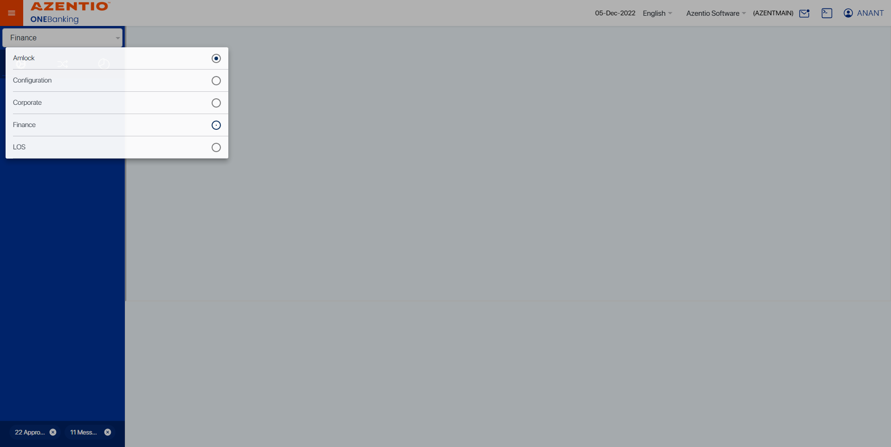Then click on report segment buttonstepdefinitions.HooksClass.addScreenshot(io.cucumber.java.Scenario)screenshot
And Get the system date for the depreciation reportstepdefinitions.HooksClass.addScreenshot(io.cucumber.java.Scenario)screenshot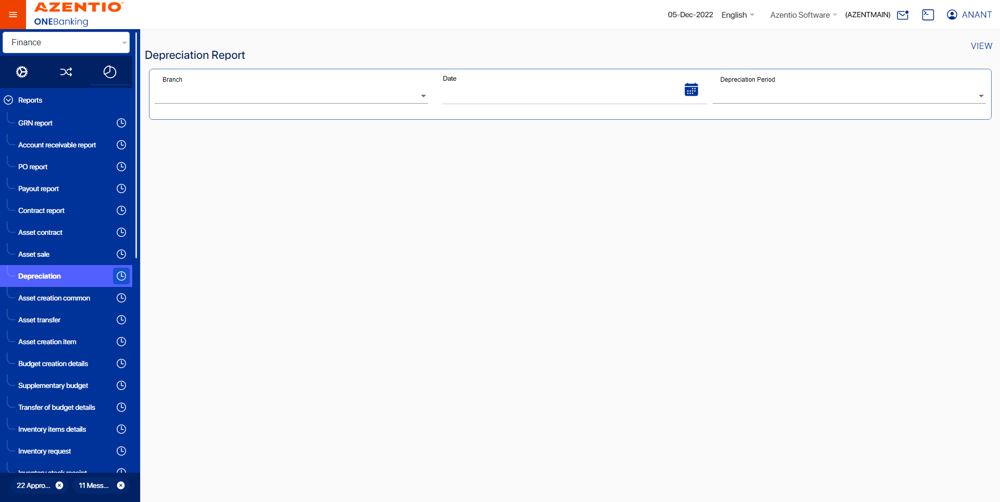And select required fields to check the depreciation details are displayingstepdefinitions.HooksClass.addScreenshot(io.cucumber.java.Scenario)screenshotThen click in the view button to checkStep skippedThen the report is displaying all the asset depreciation details for a branchStep skippedPassCheck Asset GLGiven Maker Navigate to UAT URL loginstepdefinitions.HooksClass.addScreenshot(io.cucumber.java.Scenario)screenshot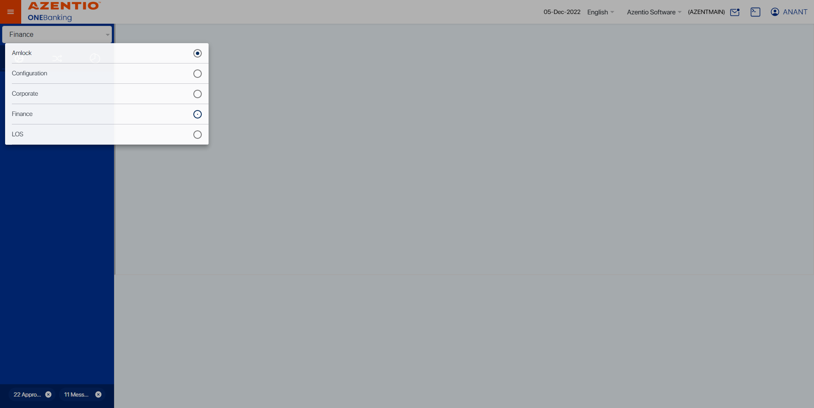Then click on report segment buttonstepdefinitions.HooksClass.addScreenshot(io.cucumber.java.Scenario)screenshot And click on equiry menustepdefinitions.HooksClass.addScreenshot(io.cucumber.java.Scenario)screenshotThen click on edit icon near by fiancial transaction menustepdefinitions.HooksClass.addScreenshot(io.cucumber.java.Scenario)screenshot
And click on equiry menustepdefinitions.HooksClass.addScreenshot(io.cucumber.java.Scenario)screenshotThen click on edit icon near by fiancial transaction menustepdefinitions.HooksClass.addScreenshot(io.cucumber.java.Scenario)screenshot And choose branch codestepdefinitions.HooksClass.addScreenshot(io.cucumber.java.Scenario)screenshotAnd choose Gl codestepdefinitions.HooksClass.addScreenshot(io.cucumber.java.Scenario)screenshotThen Get the system date for asset ammenment reportstepdefinitions.HooksClass.addScreenshot(io.cucumber.java.Scenario)screenshotAnd click on transaction from date calender iconstepdefinitions.HooksClass.addScreenshot(io.cucumber.java.Scenario)screenshotThen choose the from datestepdefinitions.HooksClass.addScreenshot(io.cucumber.java.Scenario)screenshotAnd click on the transaction to date calender iconstepdefinitions.HooksClass.addScreenshot(io.cucumber.java.Scenario)screenshotThen choose the to datestepdefinitions.HooksClass.addScreenshot(io.cucumber.java.Scenario)screenshotAnd click on view buttonstepdefinitions.HooksClass.addScreenshot(io.cucumber.java.Scenario)screenshotPassCheck If If asset is required to return after vendor paymentGiven Maker Navigate to UAT URL loginstepdefinitions.HooksClass.addScreenshot(io.cucumber.java.Scenario)screenshot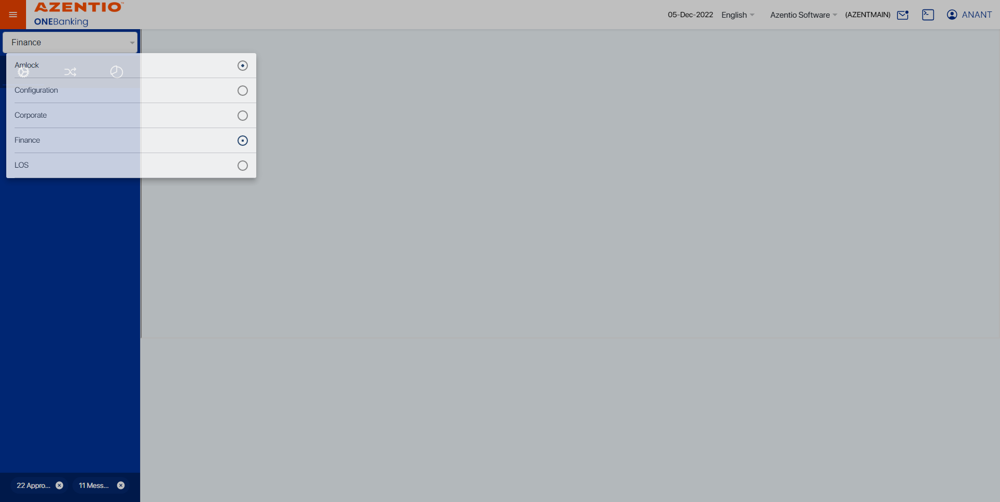Then click Third Segment buttonstepdefinitions.HooksClass.addScreenshot(io.cucumber.java.Scenario)screenshotAnd Click on Enquiry main modulestepdefinitions.HooksClass.addScreenshot(io.cucumber.java.Scenario)screenshotThen Click on Financial sub module Edit iconstepdefinitions.HooksClass.addScreenshot(io.cucumber.java.Scenario)screenshotAnd choose the data set id to return after vendor paymentstepdefinitions.HooksClass.addScreenshot(io.cucumber.java.Scenario)screenshotAnd choose branch code Idsstepdefinitions.HooksClass.addScreenshot(io.cucumber.java.Scenario)screenshot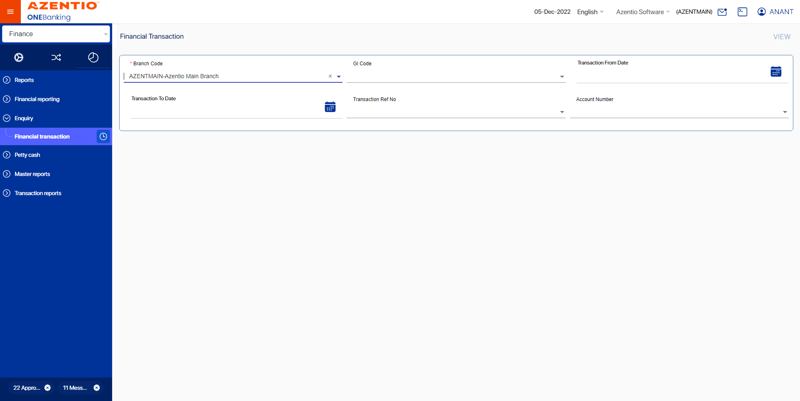Then Select GL code as Fixed asset codestepdefinitions.HooksClass.addScreenshot(io.cucumber.java.Scenario)screenshotAnd Choose the data set id for vendorpaymentstepdefinitions.HooksClass.addScreenshot(io.cucumber.java.Scenario)screenshotAnd Choose calender From datestepdefinitions.HooksClass.addScreenshot(io.cucumber.java.Scenario)screenshotThen Choose Calender To datesstepdefinitions.HooksClass.addScreenshot(io.cucumber.java.Scenario)screenshotAnd click on view button to see the Recordstepdefinitions.HooksClass.addScreenshot(io.cucumber.java.Scenario)screenshot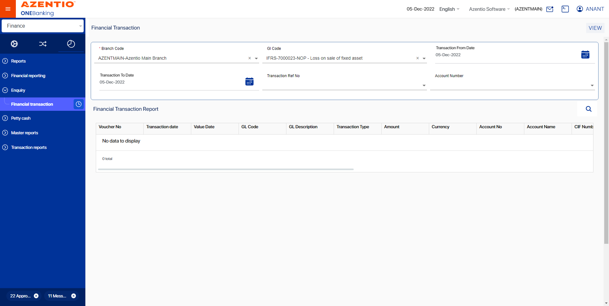PassCheck the accounting EntriesGiven Maker Navigate to UAT URL loginstepdefinitions.HooksClass.addScreenshot(io.cucumber.java.Scenario)screenshot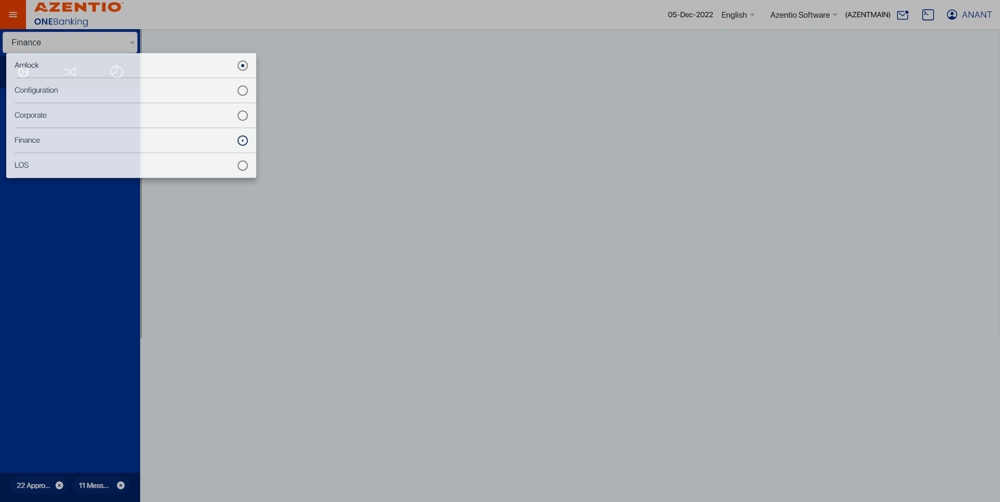Then click on report buttonstepdefinitions.HooksClass.addScreenshot(io.cucumber.java.Scenario)screenshot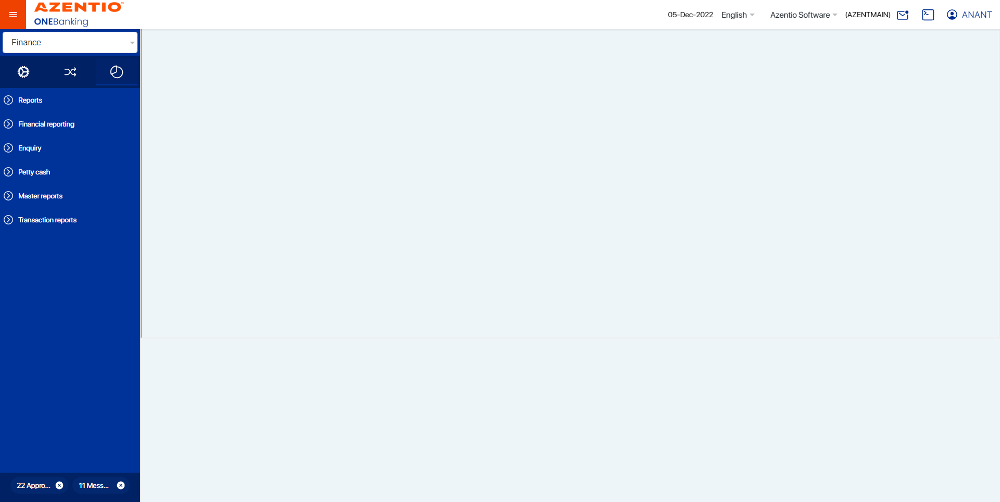And click Enquiry menustepdefinitions.HooksClass.addScreenshot(io.cucumber.java.Scenario)screenshot
And choose branch codestepdefinitions.HooksClass.addScreenshot(io.cucumber.java.Scenario)screenshotAnd choose Gl codestepdefinitions.HooksClass.addScreenshot(io.cucumber.java.Scenario)screenshotThen Get the system date for asset ammenment reportstepdefinitions.HooksClass.addScreenshot(io.cucumber.java.Scenario)screenshotAnd click on transaction from date calender iconstepdefinitions.HooksClass.addScreenshot(io.cucumber.java.Scenario)screenshotThen choose the from datestepdefinitions.HooksClass.addScreenshot(io.cucumber.java.Scenario)screenshotAnd click on the transaction to date calender iconstepdefinitions.HooksClass.addScreenshot(io.cucumber.java.Scenario)screenshotThen choose the to datestepdefinitions.HooksClass.addScreenshot(io.cucumber.java.Scenario)screenshotAnd click on view buttonstepdefinitions.HooksClass.addScreenshot(io.cucumber.java.Scenario)screenshotPassCheck If If asset is required to return after vendor paymentGiven Maker Navigate to UAT URL loginstepdefinitions.HooksClass.addScreenshot(io.cucumber.java.Scenario)screenshot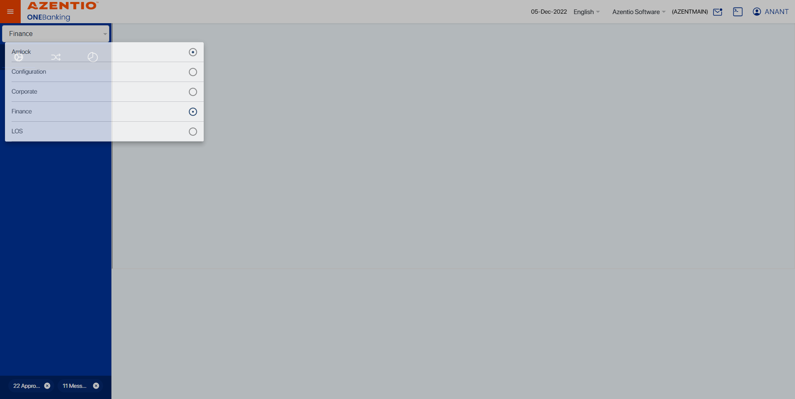Then click Third Segment buttonstepdefinitions.HooksClass.addScreenshot(io.cucumber.java.Scenario)screenshotAnd Click on Enquiry main modulestepdefinitions.HooksClass.addScreenshot(io.cucumber.java.Scenario)screenshotThen Click on Financial sub module Edit iconstepdefinitions.HooksClass.addScreenshot(io.cucumber.java.Scenario)screenshotAnd choose the data set id to return after vendor paymentstepdefinitions.HooksClass.addScreenshot(io.cucumber.java.Scenario)screenshotAnd choose branch code Idsstepdefinitions.HooksClass.addScreenshot(io.cucumber.java.Scenario)screenshot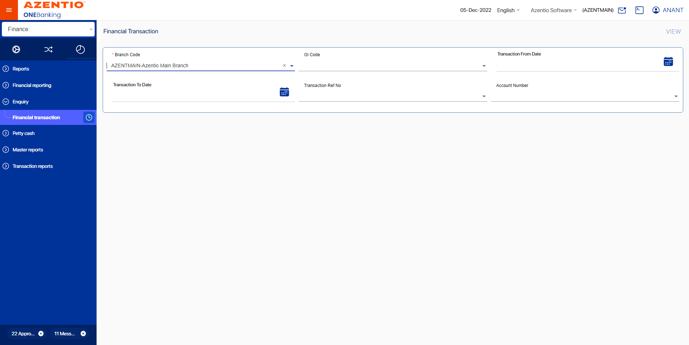Then Select GL code as Fixed asset codestepdefinitions.HooksClass.addScreenshot(io.cucumber.java.Scenario)screenshotAnd Choose the data set id for vendorpaymentstepdefinitions.HooksClass.addScreenshot(io.cucumber.java.Scenario)screenshotAnd Choose calender From datestepdefinitions.HooksClass.addScreenshot(io.cucumber.java.Scenario)screenshotThen Choose Calender To datesstepdefinitions.HooksClass.addScreenshot(io.cucumber.java.Scenario)screenshotAnd click on view button to see the Recordstepdefinitions.HooksClass.addScreenshot(io.cucumber.java.Scenario)screenshot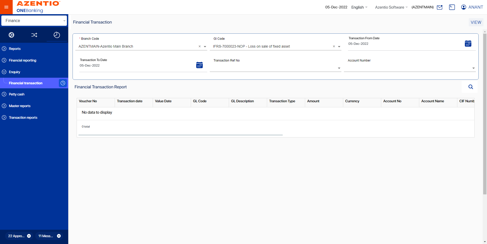PassCheck the accounting EntriesGiven Maker Navigate to UAT URL loginstepdefinitions.HooksClass.addScreenshot(io.cucumber.java.Scenario)screenshot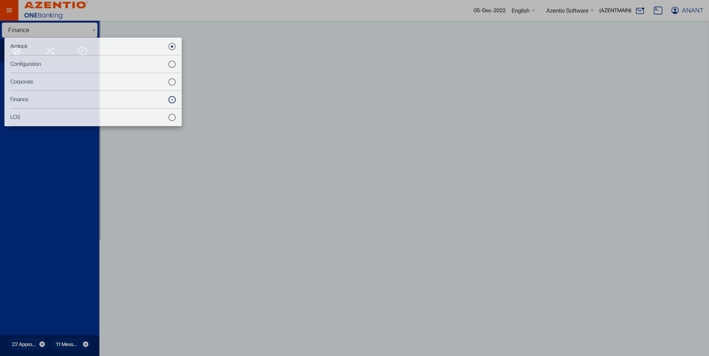Then click on report buttonstepdefinitions.HooksClass.addScreenshot(io.cucumber.java.Scenario)screenshot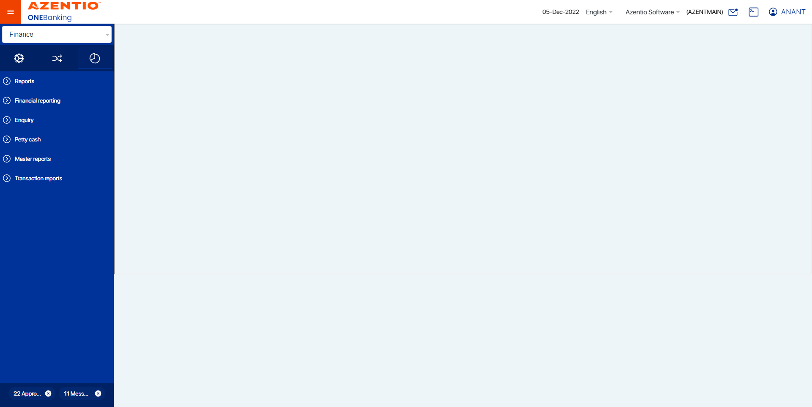And click Enquiry menustepdefinitions.HooksClass.addScreenshot(io.cucumber.java.Scenario)screenshot Then click on Edit icon near by financial transactionstepdefinitions.HooksClass.addScreenshot(io.cucumber.java.Scenario)screenshotAnd Choose the data set id for the accounting entriesstepdefinitions.HooksClass.addScreenshot(io.cucumber.java.Scenario)screenshotAnd choose branch code Idsstepdefinitions.HooksClass.addScreenshot(io.cucumber.java.Scenario)screenshot
Then click on Edit icon near by financial transactionstepdefinitions.HooksClass.addScreenshot(io.cucumber.java.Scenario)screenshotAnd Choose the data set id for the accounting entriesstepdefinitions.HooksClass.addScreenshot(io.cucumber.java.Scenario)screenshotAnd choose branch code Idsstepdefinitions.HooksClass.addScreenshot(io.cucumber.java.Scenario)screenshot Then choose the Gl code Idsstepdefinitions.HooksClass.addScreenshot(io.cucumber.java.Scenario)screenshot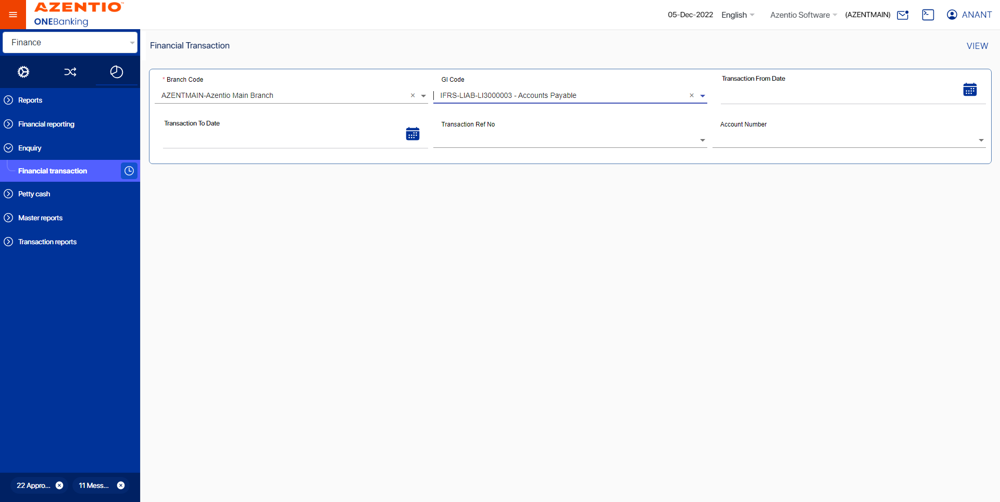Then Get the system date for accounting entriesstepdefinitions.HooksClass.addScreenshot(io.cucumber.java.Scenario)screenshotAnd click on transaction from date in calender iconstepdefinitions.HooksClass.addScreenshot(io.cucumber.java.Scenario)screenshotThen choose from date in the calendersstepdefinitions.HooksClass.addScreenshot(io.cucumber.java.Scenario)screenshotAnd click on the transaction to date in calender iconstepdefinitions.HooksClass.addScreenshot(io.cucumber.java.Scenario)screenshot
Then choose the Gl code Idsstepdefinitions.HooksClass.addScreenshot(io.cucumber.java.Scenario)screenshot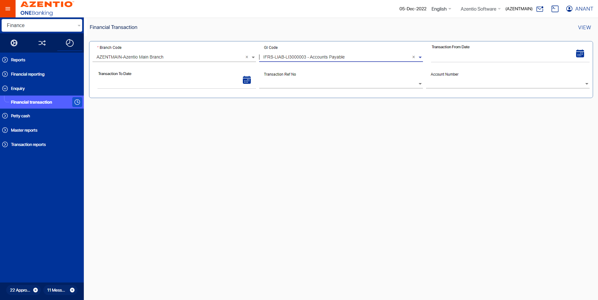Then Get the system date for accounting entriesstepdefinitions.HooksClass.addScreenshot(io.cucumber.java.Scenario)screenshotAnd click on transaction from date in calender iconstepdefinitions.HooksClass.addScreenshot(io.cucumber.java.Scenario)screenshotThen choose from date in the calendersstepdefinitions.HooksClass.addScreenshot(io.cucumber.java.Scenario)screenshotAnd click on the transaction to date in calender iconstepdefinitions.HooksClass.addScreenshot(io.cucumber.java.Scenario)screenshot Then choose the To date in the calendersstepdefinitions.HooksClass.addScreenshot(io.cucumber.java.Scenario)screenshotAnd click on view button to see the Recordstepdefinitions.HooksClass.addScreenshot(io.cucumber.java.Scenario)screenshotPassCheck the accounting EntriesGiven Maker Navigate to UAT URL loginstepdefinitions.HooksClass.addScreenshot(io.cucumber.java.Scenario)screenshotThen click on report buttonstepdefinitions.HooksClass.addScreenshot(io.cucumber.java.Scenario)screenshotAnd click Enquiry menustepdefinitions.HooksClass.addScreenshot(io.cucumber.java.Scenario)screenshot
Then choose the To date in the calendersstepdefinitions.HooksClass.addScreenshot(io.cucumber.java.Scenario)screenshotAnd click on view button to see the Recordstepdefinitions.HooksClass.addScreenshot(io.cucumber.java.Scenario)screenshotPassCheck the accounting EntriesGiven Maker Navigate to UAT URL loginstepdefinitions.HooksClass.addScreenshot(io.cucumber.java.Scenario)screenshotThen click on report buttonstepdefinitions.HooksClass.addScreenshot(io.cucumber.java.Scenario)screenshotAnd click Enquiry menustepdefinitions.HooksClass.addScreenshot(io.cucumber.java.Scenario)screenshot Then click on Edit icon near by financial transactionstepdefinitions.HooksClass.addScreenshot(io.cucumber.java.Scenario)screenshot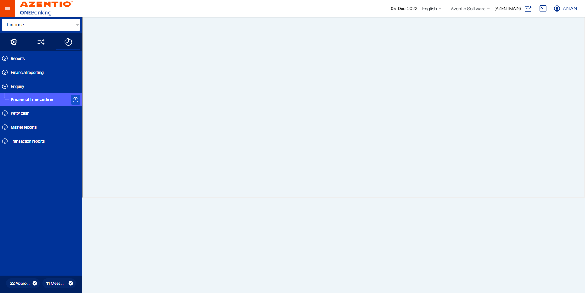Then Choose the data set id for accountinmg entriesstepdefinitions.HooksClass.addScreenshot(io.cucumber.java.Scenario)screenshot
Then click on Edit icon near by financial transactionstepdefinitions.HooksClass.addScreenshot(io.cucumber.java.Scenario)screenshot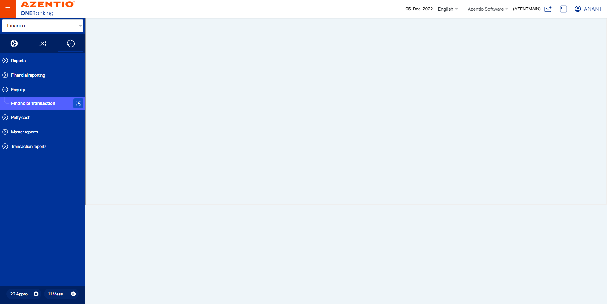Then Choose the data set id for accountinmg entriesstepdefinitions.HooksClass.addScreenshot(io.cucumber.java.Scenario)screenshot And choose branch code Idsstepdefinitions.HooksClass.addScreenshot(io.cucumber.java.Scenario)screenshotThen choose the Gl code Idsstepdefinitions.HooksClass.addScreenshot(io.cucumber.java.Scenario)screenshotThen Get the system date for accounting entriesstepdefinitions.HooksClass.addScreenshot(io.cucumber.java.Scenario)screenshotAnd click on transaction from date in calender iconstepdefinitions.HooksClass.addScreenshot(io.cucumber.java.Scenario)screenshotThen choose from date in the calendersstepdefinitions.HooksClass.addScreenshot(io.cucumber.java.Scenario)screenshotAnd click on the transaction to date in calender iconstepdefinitions.HooksClass.addScreenshot(io.cucumber.java.Scenario)screenshotThen choose the To date in the calendersstepdefinitions.HooksClass.addScreenshot(io.cucumber.java.Scenario)screenshotAnd click on view button to see the Recordstepdefinitions.HooksClass.addScreenshot(io.cucumber.java.Scenario)screenshotPassCheck Asset Limit ConfigAnd User get the limit config testdata for test case01stepdefinitions.HooksClass.addScreenshot(io.cucumber.java.Scenario)screenshot
And choose branch code Idsstepdefinitions.HooksClass.addScreenshot(io.cucumber.java.Scenario)screenshotThen choose the Gl code Idsstepdefinitions.HooksClass.addScreenshot(io.cucumber.java.Scenario)screenshotThen Get the system date for accounting entriesstepdefinitions.HooksClass.addScreenshot(io.cucumber.java.Scenario)screenshotAnd click on transaction from date in calender iconstepdefinitions.HooksClass.addScreenshot(io.cucumber.java.Scenario)screenshotThen choose from date in the calendersstepdefinitions.HooksClass.addScreenshot(io.cucumber.java.Scenario)screenshotAnd click on the transaction to date in calender iconstepdefinitions.HooksClass.addScreenshot(io.cucumber.java.Scenario)screenshotThen choose the To date in the calendersstepdefinitions.HooksClass.addScreenshot(io.cucumber.java.Scenario)screenshotAnd click on view button to see the Recordstepdefinitions.HooksClass.addScreenshot(io.cucumber.java.Scenario)screenshotPassCheck Asset Limit ConfigAnd User get the limit config testdata for test case01stepdefinitions.HooksClass.addScreenshot(io.cucumber.java.Scenario)screenshot Given Maker Navigate to UAT URL loginstepdefinitions.HooksClass.addScreenshot(io.cucumber.java.Scenario)screenshotThen click on report iconstepdefinitions.HooksClass.addScreenshot(io.cucumber.java.Scenario)screenshotAnd user should navigate to master reports menustepdefinitions.HooksClass.addScreenshot(io.cucumber.java.Scenario)screenshotThen click on temp grid button of asset limit configurationstepdefinitions.HooksClass.addScreenshot(io.cucumber.java.Scenario)screenshotThen Get the system date for asset ammenment reportstepdefinitions.HooksClass.addScreenshot(io.cucumber.java.Scenario)screenshotAnd select the accountings standards and date to check the asset limit are displayingstepdefinitions.HooksClass.addScreenshot(io.cucumber.java.Scenario)screenshotThen click in the view button to checkstepdefinitions.HooksClass.addScreenshot(io.cucumber.java.Scenario)screenshot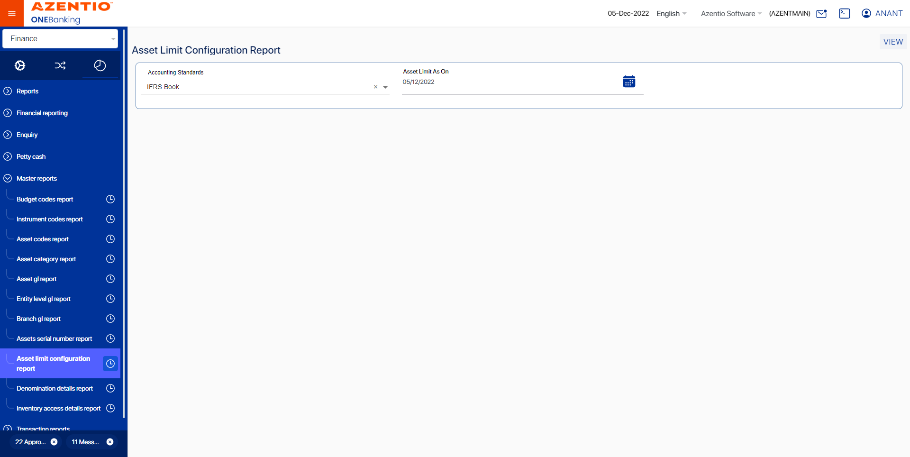Then the report is displaying all the asset codes details for a branchstepdefinitions.HooksClass.addScreenshot(io.cucumber.java.Scenario)screenshotFailCheck Asset CategoryAnd User get the limit config testdata for test case02stepdefinitions.HooksClass.addScreenshot(io.cucumber.java.Scenario)screenshotGiven Maker Navigate to UAT URL loginstepdefinitions.HooksClass.addScreenshot(io.cucumber.java.Scenario)screenshotThen click on report iconstepdefinitions.HooksClass.addScreenshot(io.cucumber.java.Scenario)screenshotAnd user should navigate to master reports menustepdefinitions.HooksClass.addScreenshot(io.cucumber.java.Scenario)screenshotThen click on temp grid button of asset categorystepdefinitions.HooksClass.addScreenshot(io.cucumber.java.Scenario)screenshot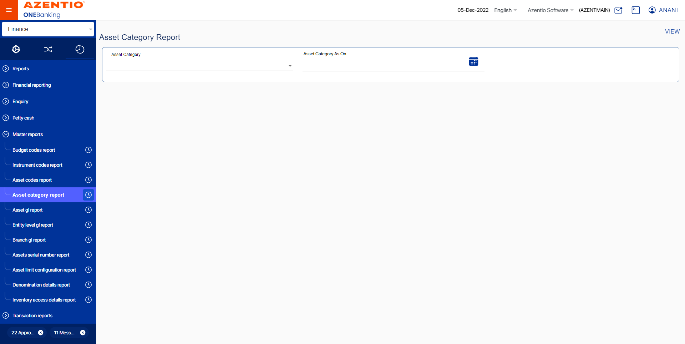And select the asset categorys and date to check the asset category are displayingstepdefinitions.HooksClass.addScreenshot(io.cucumber.java.Scenario)screenshotThen click in the view button to checkStep skippedThen the report is displaying all the asset codes details for a branchStep skipped
Given Maker Navigate to UAT URL loginstepdefinitions.HooksClass.addScreenshot(io.cucumber.java.Scenario)screenshotThen click on report iconstepdefinitions.HooksClass.addScreenshot(io.cucumber.java.Scenario)screenshotAnd user should navigate to master reports menustepdefinitions.HooksClass.addScreenshot(io.cucumber.java.Scenario)screenshotThen click on temp grid button of asset limit configurationstepdefinitions.HooksClass.addScreenshot(io.cucumber.java.Scenario)screenshotThen Get the system date for asset ammenment reportstepdefinitions.HooksClass.addScreenshot(io.cucumber.java.Scenario)screenshotAnd select the accountings standards and date to check the asset limit are displayingstepdefinitions.HooksClass.addScreenshot(io.cucumber.java.Scenario)screenshotThen click in the view button to checkstepdefinitions.HooksClass.addScreenshot(io.cucumber.java.Scenario)screenshot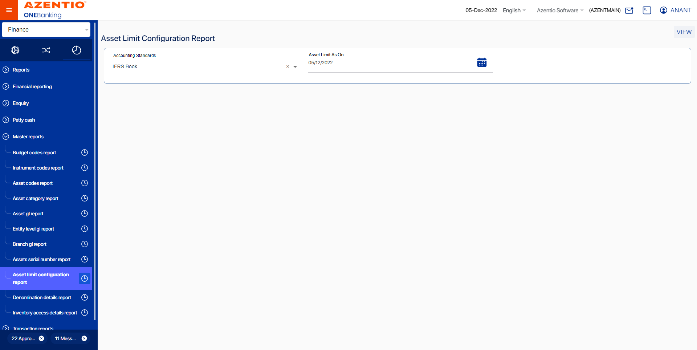Then the report is displaying all the asset codes details for a branchstepdefinitions.HooksClass.addScreenshot(io.cucumber.java.Scenario)screenshotFailCheck Asset CategoryAnd User get the limit config testdata for test case02stepdefinitions.HooksClass.addScreenshot(io.cucumber.java.Scenario)screenshotGiven Maker Navigate to UAT URL loginstepdefinitions.HooksClass.addScreenshot(io.cucumber.java.Scenario)screenshotThen click on report iconstepdefinitions.HooksClass.addScreenshot(io.cucumber.java.Scenario)screenshotAnd user should navigate to master reports menustepdefinitions.HooksClass.addScreenshot(io.cucumber.java.Scenario)screenshotThen click on temp grid button of asset categorystepdefinitions.HooksClass.addScreenshot(io.cucumber.java.Scenario)screenshot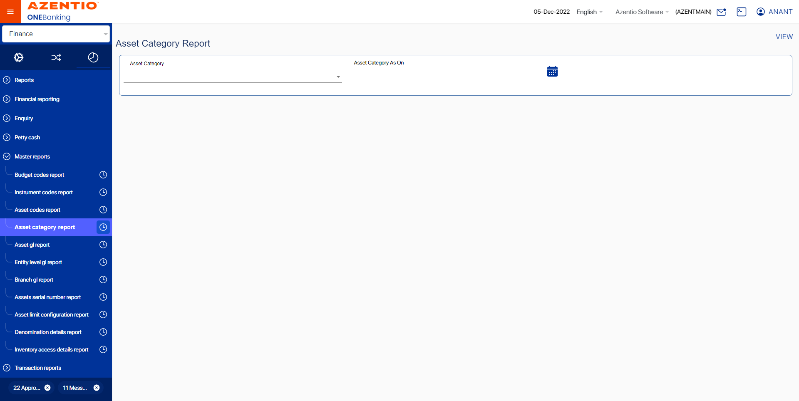And select the asset categorys and date to check the asset category are displayingstepdefinitions.HooksClass.addScreenshot(io.cucumber.java.Scenario)screenshotThen click in the view button to checkStep skippedThen the report is displaying all the asset codes details for a branchStep skipped
Started
Feb 2, 2023 05:58:03 PM
Ended
Feb 2, 2023 06:14:21 PM
Features Passed
0
Features Failed
1
Features
Scenarios
Steps
Timeline
Tags
| Name | Passed | Failed | Skipped | Others | Passed % |
|---|---|---|---|---|---|
| @KUBS_FAT_UAT_013_003_AssetCode | 1 | 0 | 0 | 0 | 100% |
| @KUBS_FAT_UAT_013_017_Replacement | 1 | 0 | 0 | 0 | 100% |
| @KUBS_FAT_UAT_013_013_Assetsale | 1 | 0 | 0 | 0 | 100% |
| @KUBS_FAT_UAT_013_004_Depreciation | 0 | 1 | 0 | 0 | 0% |
| @KUBS_FAT_UAT_013_001 | 1 | 0 | 0 | 0 | 100% |
| @KUBS_FAT_UAT_013_014_AssetAllocation | 1 | 0 | 0 | 0 | 100% |
| @MultiAuth | 1 | 0 | 0 | 0 | 100% |
| @KUBS_FAT_UAT_013_005_AssetGl | 1 | 0 | 0 | 0 | 100% |
| @KUBS_FAT_UAT_013_018_ImpairementLoss | 1 | 0 | 0 | 0 | 100% |
| @KUBS_FAT_UAT_013_011_AssetTransfer | 0 | 1 | 0 | 0 | 0% |
| @KUBS_FAT_UAT_004_002_AccountingEntries1 | 1 | 0 | 0 | 0 | 100% |
| @KUBS_FAT_UAT_004_004_AccountingEntries2 | 1 | 0 | 0 | 0 | 100% |
| @KUBS_FAT_UAT_013_002 | 0 | 1 | 0 | 0 | 0% |
| @KUBS_FAT_UAT_013_012_AssetUndertaking | 1 | 0 | 0 | 0 | 100% |
| @KUBS_FAT_UAT_013_016_Return | 1 | 0 | 0 | 0 | 100% |
| @KUBS_FAT_UAT_013_015_Deallocation | 1 | 0 | 0 | 0 | 100% |
| @KUBS_FAT_UAT_013_010_AssetAmmenment | 1 | 0 | 0 | 0 | 100% |
| @KUBS_FAT_UAT_013_019_Revaluation | 1 | 0 | 0 | 0 | 100% |
| @KUBS_FAT_UAT_013_009_AssetContract | 1 | 0 | 0 | 0 | 100% |
| @KUBS_FAT_UAT_007_009_vendorpayment | 1 | 0 | 0 | 0 | 100% |
System/Environment
| Name | Value |
|---|---|
| version | 10 |
| os | windows |
-
@KUBS_FAT_UAT_013_003_AssetCode
1 tests
@KUBS_FAT_UAT_013_003_AssetCode
1 passedStatus Timestamp TestName Pass 18:09:59 PM Check Asset Codes To verify the reports for fixed asset.Check Asset Codes -
@KUBS_FAT_UAT_013_017_Replacement
1 tests
@KUBS_FAT_UAT_013_017_Replacement
1 passedStatus Timestamp TestName Pass 17:59:47 PM Check Asset replacement Report To verify the reports for fixed asset.Check Asset replacement Report -
@KUBS_FAT_UAT_013_013_Assetsale
1 tests
@KUBS_FAT_UAT_013_013_Assetsale
1 passedStatus Timestamp TestName Pass 18:05:39 PM Map the various GLs for created asset code To verify the reports for fixed asset.Map the various GLs for created asset code -
@KUBS_FAT_UAT_013_004_Depreciation
1 tests
@KUBS_FAT_UAT_013_004_Depreciation
1 failedStatus Timestamp TestName Fail 18:10:30 PM Check Depreciation To verify the reports for fixed asset.Check Depreciation -
@KUBS_FAT_UAT_013_001
1 tests
@KUBS_FAT_UAT_013_001
1 passedStatus Timestamp TestName Pass 18:13:16 PM Check Asset Limit Config To verify the reports for fixed asset.Check Asset Limit Config -
@KUBS_FAT_UAT_013_014_AssetAllocation
1 tests
@KUBS_FAT_UAT_013_014_AssetAllocation
1 passedStatus Timestamp TestName Pass 18:03:57 PM Check Asset Allocation Report To verify the reports for fixed asset.Check Asset Allocation Report -
@MultiAuth
1 tests
@MultiAuth
1 passedStatus Timestamp TestName Pass 18:05:39 PM Map the various GLs for created asset code To verify the reports for fixed asset.Map the various GLs for created asset code -
@KUBS_FAT_UAT_013_005_AssetGl
1 tests
@KUBS_FAT_UAT_013_005_AssetGl
1 passedStatus Timestamp TestName Pass 18:10:55 PM Check Asset GL To verify the reports for fixed asset.Check Asset GL -
@KUBS_FAT_UAT_013_018_ImpairementLoss
1 tests
@KUBS_FAT_UAT_013_018_ImpairementLoss
1 passedStatus Timestamp TestName Pass 18:03:06 PM Check Impairement Loss booking Report To verify the reports for fixed asset.Check Impairement Loss booking Report -
@KUBS_FAT_UAT_013_011_AssetTransfer
1 tests
@KUBS_FAT_UAT_013_011_AssetTransfer
1 failedStatus Timestamp TestName Fail 18:07:20 PM Check Asset Transfer To verify the reports for fixed asset.Check Asset Transfer -
@KUBS_FAT_UAT_004_002_AccountingEntries1
1 tests
@KUBS_FAT_UAT_004_002_AccountingEntries1
1 passedStatus Timestamp TestName Pass 18:12:00 PM Check the accounting Entries To verify the reports for fixed asset.Check the accounting Entries -
@KUBS_FAT_UAT_004_004_AccountingEntries2
1 tests
@KUBS_FAT_UAT_004_004_AccountingEntries2
1 passedStatus Timestamp TestName Pass 18:12:39 PM Check the accounting Entries To verify the reports for fixed asset.Check the accounting Entries -
@KUBS_FAT_UAT_013_002
1 tests
@KUBS_FAT_UAT_013_002
1 failedStatus Timestamp TestName Fail 18:13:54 PM Check Asset Category To verify the reports for fixed asset.Check Asset Category -
@KUBS_FAT_UAT_013_012_AssetUndertaking
1 tests
@KUBS_FAT_UAT_013_012_AssetUndertaking
1 passedStatus Timestamp TestName Pass 18:06:29 PM Check Asset Undertaking To verify the reports for fixed asset.Check Asset Undertaking -
@KUBS_FAT_UAT_013_016_Return
1 tests
@KUBS_FAT_UAT_013_016_Return
1 passedStatus Timestamp TestName Pass 18:00:34 PM Check Asset return Report To verify the reports for fixed asset.Check Asset return Report -
@KUBS_FAT_UAT_013_015_Deallocation
1 tests
@KUBS_FAT_UAT_013_015_Deallocation
1 passedStatus Timestamp TestName Pass 18:04:44 PM Check Asset DeAllocation Report To verify the reports for fixed asset.Check Asset DeAllocation Report -
@KUBS_FAT_UAT_013_010_AssetAmmenment
1 tests
@KUBS_FAT_UAT_013_010_AssetAmmenment
1 passedStatus Timestamp TestName Pass 18:09:23 PM Check Asset Amendment Report To verify the reports for fixed asset.Check Asset Amendment Report -
@KUBS_FAT_UAT_013_019_Revaluation
1 tests
@KUBS_FAT_UAT_013_019_Revaluation
1 passedStatus Timestamp TestName Pass 17:58:11 PM Check Asset Revaluation Report To verify the reports for fixed asset.Check Asset Revaluation Report -
@KUBS_FAT_UAT_013_009_AssetContract
1 tests
@KUBS_FAT_UAT_013_009_AssetContract
1 passedStatus Timestamp TestName Pass 18:08:45 PM Check Asset Contract To verify the reports for fixed asset.Check Asset Contract -
@KUBS_FAT_UAT_007_009_vendorpayment
1 tests
@KUBS_FAT_UAT_007_009_vendorpayment
1 passedStatus Timestamp TestName Pass 18:11:29 PM Check If If asset is required to return after vendor payment To verify the reports for fixed asset.Check If If asset is required to return after vendor payment
-
org.openqa.selenium.TimeoutException
1 tests
org.openqa.selenium.TimeoutException
1 failedStatus Timestamp TestName Fail 18:07:22 PM Given User should go to the kubs url and login as a maker user To verify the reports for fixed asset.Check Asset Transfer.Given User should go to the kubs url and login as a maker user -
java.lang.IllegalArgumentException
1 tests
java.lang.IllegalArgumentException
1 failedStatus Timestamp TestName Fail 18:10:54 PM And select required fields to check the depreciation details are displaying To verify the reports for fixed asset.Check Depreciation.And select required fields to check the depreciation details are displaying -
java.lang.Error
1 tests
java.lang.Error
1 failedStatus Timestamp TestName Fail 18:14:21 PM And select the asset categorys and date to check the asset category are displaying To verify the reports for fixed asset.Check Asset Category.And select the asset categorys and date to check the asset category are displaying